A landmark 10-year cohort study followed 20,000 adults and found that light wine drinkers had 30% lower risk of myocardial infarction compared to non-drinkers. Newspapers proclaimed: “Wine is Cardioprotective!” Cardiologists recommended moderate wine consumption as a preventive measure.
But careful reading reveals the study has three critical problems:
Selection bias (healthy user bias): Non-drinkers include former alcoholics who quit because of prior health problems. They’re inherently sicker.
Confounding: Wine drinkers have higher socioeconomic status (SES), better access to healthcare, exercise more regularly, and eat Mediterranean diets.
Reverse causality: Sick people quit drinking on doctor’s orders. The low risk in “non-drinkers” reflects pre-existing health advantage.
The conclusion the headlines drew is almost certainly wrong. Yet the data itself is real. What went wrong? The study design didn’t prevent the researchers from drawing false conclusions.
This module teaches you how to recognize which study designs allow which conclusions, and which biases can undermine even well-intentioned research.
Every clinical question can be studied with different designs. Each design has different strengths and weaknesses for establishing causality. This is the most important skill in evidence-based medicine.
8.2 Part 1: The Spectrum of Study Designs
The most fundamental classification of study designs relates to two dimensions:
Direction of inquiry: Does the study move forward in time (prospective) or backward (retrospective)?
Control of assignment: Are participants randomly assigned to exposure (experimental) or observed as they naturally occur (observational)?
Visual Overview: Hierarchy and Spectrum
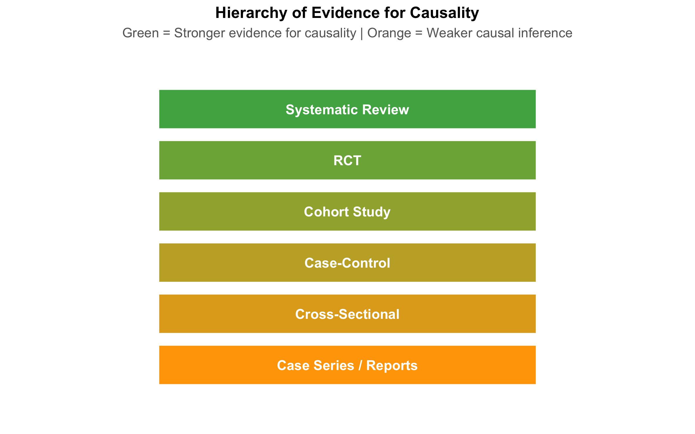
Timeline and Direction of Inquiry
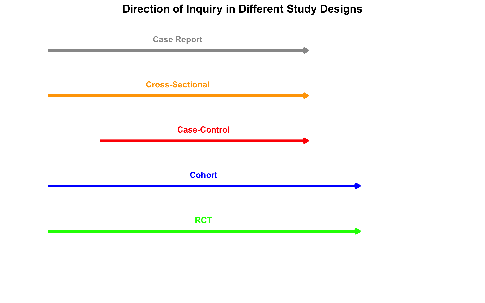
Key Distinctions
Observational vs. Experimental Studies: - Observational: Researchers observe people as they naturally occur (exposed/unexposed). Cannot establish causality confidently because confounding is inevitable. - Experimental: Researchers randomly assign people to exposure/no exposure. Randomization breaks confounding.
8.3 Part 2: Cross-Sectional Studies
Design and Measures
A cross-sectional study is a snapshot. At one point in time, you measure both exposure and outcome in a defined population. Examples: - NFHS survey measuring anemia prevalence by state - A hospital survey asking patients about diet and cholesterol at the same visit - Sentinel surveillance for COVID-19 prevalence
Key limitation: No temporal sequence. You don’t know if exposure came before outcome.
Measures: Prevalence, Not Incidence
In cross-sectional studies, we calculate prevalence and the prevalence odds ratio (POR)—NOT relative risk.
Prevalence = (Number with outcome) / (Total population)
Prevalence Odds Ratio (POR) = (Odds of outcome in exposed) / (Odds of outcome in unexposed)
Mistake: Reporting “relative risk” from a cross-sectional study.
Cross-sectional studies measure prevalence, and the odds ratio approximates relative risk only when the outcome is rare (<10%). If anemia affects 40% of women, the POR is NOT a relative risk.
Example: Anemia in India (NFHS-like Data)
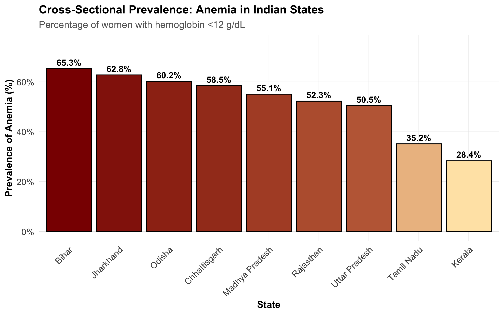
Strengths and Limitations
Strength
Limitation
Fast and inexpensive
No temporal sequence → cannot establish causality
Good for measuring burden of disease
Exposure may have changed since outcome occurred
Large sample sizes possible
Survivor bias (those with outcome who survived)
Useful for hypothesis generation
Recall bias in measuring past exposures
8.4 Part 3: Case-Control Studies
Design: Starting with the Outcome
A case-control study reverses the usual causal pathway. You: 1. Identify cases (people with the outcome) 2. Identify controls (people without the outcome, from the same source) 3. Look backward to compare exposure frequency between groups
Measure: Odds Ratio
The odds ratio is the measure of association in case-control studies.
Odds Ratio (OR) = \(\frac{a \times d}{b \times c}\)
where: - \(a\) = cases with exposure - \(b\) = cases without exposure - \(c\) = controls with exposure - \(d\) = controls without exposure
Interpretation: An OR of 3.0 means the odds of exposure among cases is 3 times higher than among controls.
When to Use Case-Control Studies
Case-control studies are ideal when:
Outcome is rare: Following 10,000 people for 5 years to see if 3 get cancer is expensive. Starting with 200 cancer cases is much faster.
Long latency period: If a chemical exposure today causes cancer 20 years later, a cohort study would take 20 years. Case-control studies work with existing cases.
Expensive exposure measurement: If measuring blood PCB levels is costly, measure it only in cases and a matched sample of controls.
Critical Issue: Control Selection
The Oral Cancer Case-Control Study in North India
A study aimed to identify risk factors for oral cancer, comparing 500 patients with oral cancer to 500 hospital controls. The control group consisted of patients admitted for other reasons (dental problems, gastroenteritis, orthopedic injuries).
Problem: The controls had different exposure patterns because they came from the same hospital. People admitted to a hospital are ill. The “healthy” reference we want doesn’t match hospital patients.
Result: Chewing tobacco appeared less strongly associated with oral cancer than it should be, because the controls also had high tobacco use (common in North India).
Solution: Controls should come from the same source population as cases—for example, from the same neighborhoods where the cases were identified.
Berkson’s Bias (Hospital-Based Selection Bias)
When hospital-based controls are used, they don’t represent the source population. Berkson’s bias occurs because hospitalization itself is associated with certain exposures and conditions.
Hospital patients are: - Sicker than the general population - More likely to have multiple conditions - Have different exposure patterns (more tobacco use, alcohol, occupational exposures)
Always use population-based controls whenever possible.
Other Biases in Case-Control Studies
Recall bias: Cases with disease often remember past exposures better (or blame past exposure for their illness), while controls forget. An oral cancer patient may more vividly recall 20 years of tobacco chewing than a healthy person recalls.
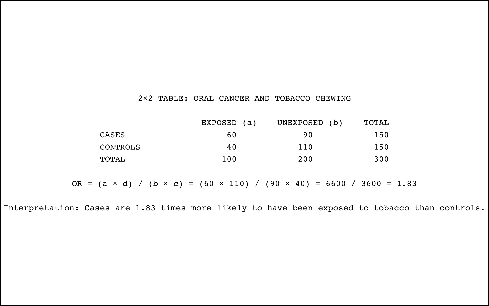
Example: Oral Cancer and Paan Chewing
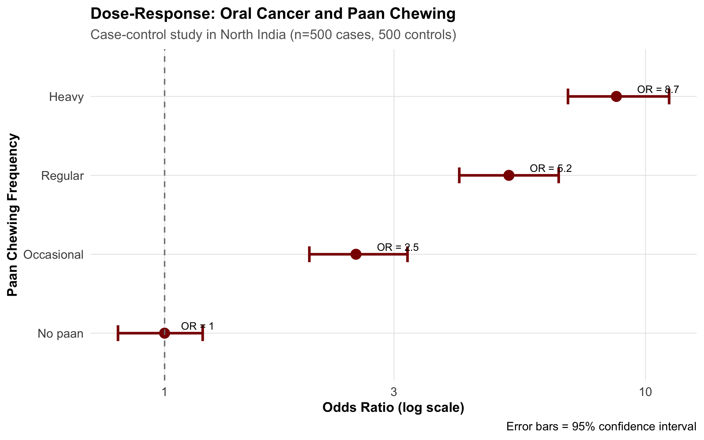
8.5 Part 4: Cohort Studies
Design: Following Exposed and Unexposed Forward
A cohort study follows the natural causal sequence:
Identify exposed and unexposed people (or different levels of exposure)
Follow them forward in time
Measure outcome incidence in each group
Unlike case-control studies, cohort studies measure incidence (new cases) and relative risk.
Measures: Relative Risk and Absolute Risk
Relative Risk (RR) = \(\frac{\text{Incidence in exposed}}{\text{Incidence in unexposed}} = \frac{a/(a+b)}{c/(c+d)}\)
Number Needed to Treat (NNT) = \(\frac{1}{\text{ARR}}\)
where: - \(a\) = exposed with outcome - \(b\) = exposed without outcome - \(c\) = unexposed with outcome - \(d\) = unexposed without outcome
Prospective vs. Retrospective Cohorts
Prospective cohorts: Follow people forward from NOW into the FUTURE. - Gold standard but slow and expensive - Example: Framingham Heart Study (started 1948, still ongoing)
Retrospective cohorts: Use existing records (medical charts, insurance databases) to reconstruct exposure and outcome. - Much faster and cheaper - Relies on quality of historical records - Example: Using hospital discharge records to follow patients with diabetes
Example: Tobacco and Oral Cancer in a Cohort Study
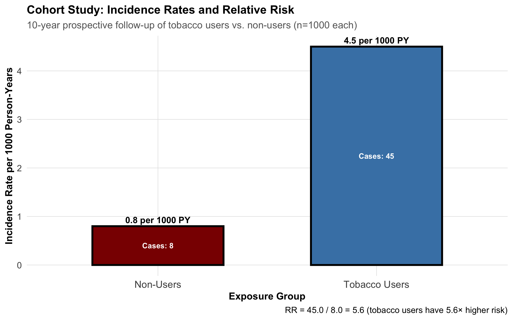
Strengths and Limitations of Cohort Studies
Strength
Limitation
Clear temporal sequence (exposure before outcome)
Expensive and time-consuming
Can measure incidence and RR
Loss to follow-up can bias results
Can study multiple outcomes
Requires large sample sizes
Less prone to recall bias
Confounding is still possible
8.6 Part 5: Randomized Controlled Trials (RCTs)
Why Randomization Breaks Confounding
The randomized controlled trial is the gold standard for establishing causality in medicine. Here’s why:
Randomization breaks the causal link between confounders and exposure. It distributes all confounders (known and unknown) equally between the exposed and control groups.
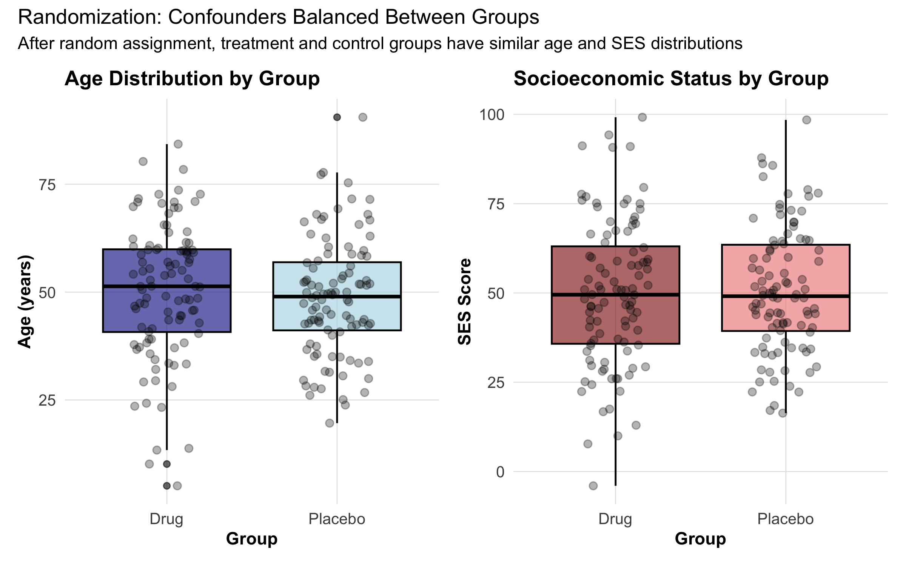
Key Features of RCTs
1. Allocation Concealment: Researchers don’t know which participant will get drug vs. placebo until after enrollment. This prevents bias in who gets assigned to which group.
2. Blinding: - Single-blind: Participants don’t know if they’re getting drug or placebo - Double-blind: Neither participants nor researchers know - Triple-blind: Participants, researchers, AND analysts don’t know until after analysis
ITT vs. Per-Protocol Analysis
Two analysis approaches exist:
Intention-to-Treat (ITT): Analyze all randomized participants in their assigned groups, whether they took the drug or not. - Preserves randomization - Reflects real-world effectiveness - May underestimate true efficacy
Per-Protocol: Analyze only those who completed treatment as assigned. - Measures efficacy under ideal conditions - Can introduce bias (who drops out?) - Less generalizable
Modern trials always report ITT as the primary analysis, because it maintains the validity of randomization. Per-protocol analysis is secondary.
Strengths and Limitations
Strength
Limitation
Gold standard for causality
Expensive and time-consuming
Randomization breaks confounding
May be unethical (can’t randomize to harmful exposures)
Double-blinding reduces bias
Hawthorne effect (behavior changes when observed)
Clear temporal sequence
Limited to one outcome per trial
Restricted to willing, healthy volunteers (low generalizability)
Example: Indian COVID Vaccine Trial
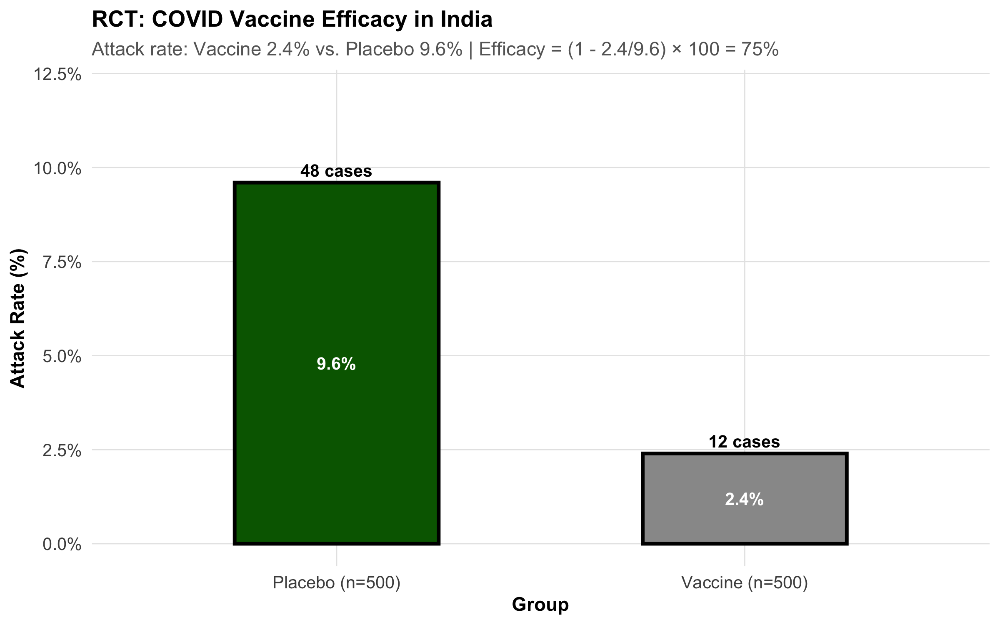
8.7 Part 6: Bias — Systematic Errors That Distort Truth
Bias is any systematic deviation from the true value. Unlike random error (which averages out), bias consistently pushes estimates in one direction.
Selection Bias: Who Gets In?
Selection bias occurs when the way people are selected into the study is related to both exposure and outcome.
Healthy Volunteer Bias
People who volunteer for studies tend to be healthier. If comparing vitamin users (who volunteer) to non-users (population sample), vitamin users appear healthier—not because of the vitamin, but because healthier people volunteer.
Berkson’s Bias (Hospital Selection Bias)
Already discussed in case-control section: Hospital-based controls don’t represent the source population.
Loss to Follow-Up Bias
In cohort studies, if sicker people drop out preferentially, your final sample is artificially healthy.
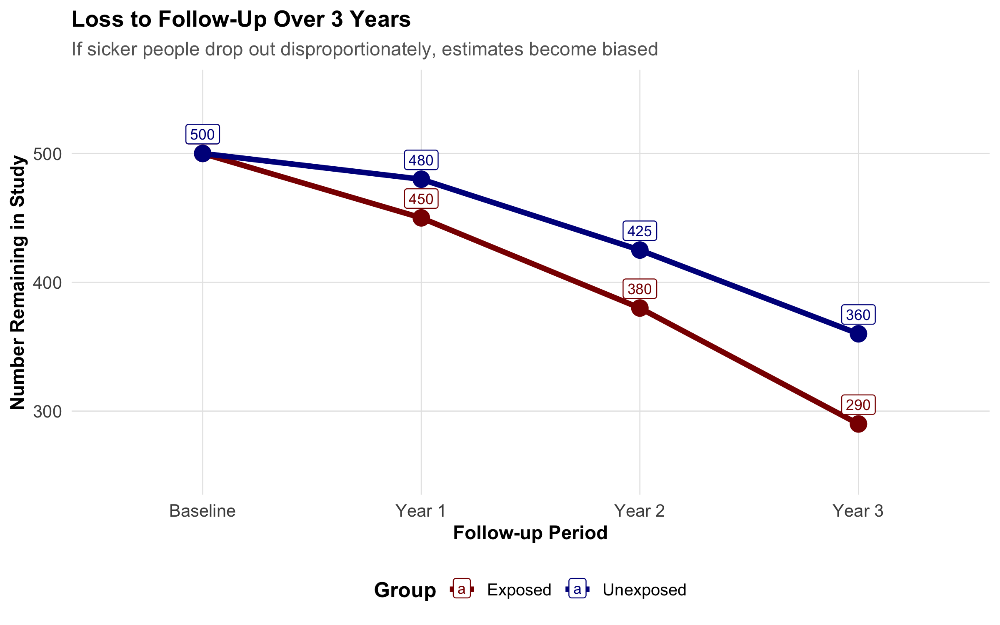
Information/Measurement Bias: How Accurately Measured?
Recall bias: Cases remember past exposures better than controls. - Example: A mother of a child with birth defects might recall a fever in early pregnancy better than a mother of a healthy child.
Interviewer bias: Interviewer’s knowledge of the outcome influences how questions are asked. - Example: Knowing a patient has cancer, an interviewer might ask about pesticide exposure more probing questions.
Misclassification: Exposure or outcome is incorrectly classified. - Non-differential misclassification (equal error in both groups): Biases toward the null (makes associations appear weaker) - Differential misclassification (different error rates): Can bias in either direction
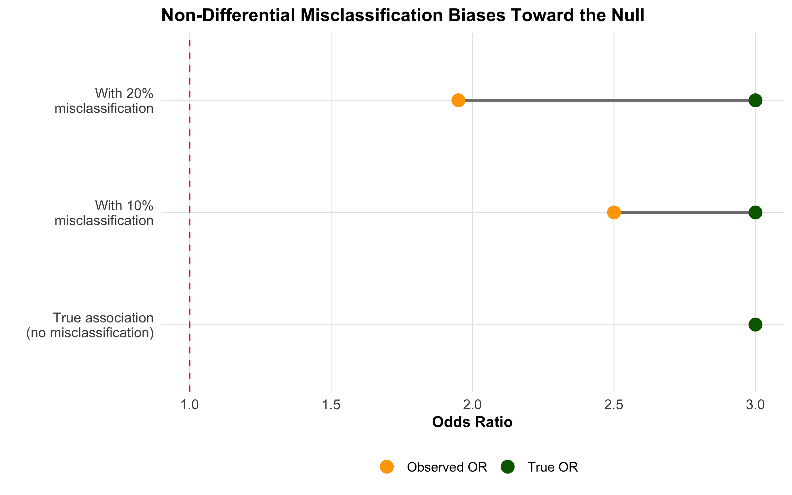
Lead-Time Bias and Length Bias
Lead-time bias: If a disease is detected earlier (but prognosis doesn’t change), survival appears longer. - Example: Screening for cancer 6 months earlier doesn’t extend life, just extends the “survival time” from diagnosis.
Length bias: Screening detects slower-growing, less fatal cancers preferentially. - Example: Breast cancer screening finds more slow-growing cancers that have good prognosis anyway.
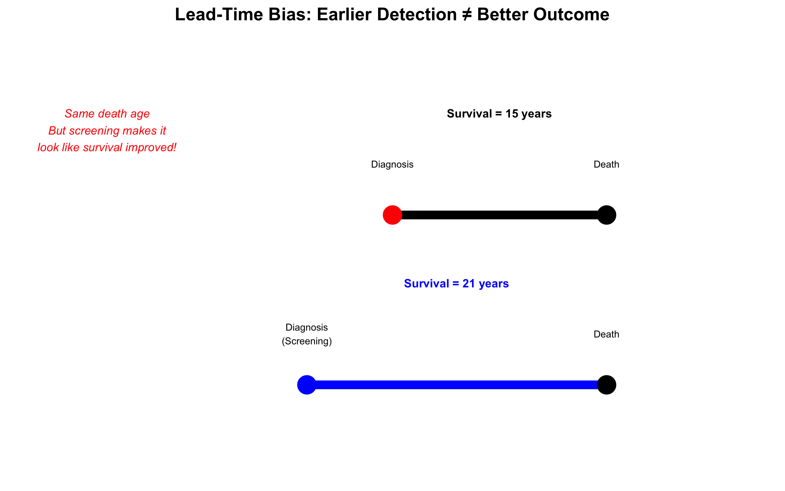
8.8 Part 7: Confounding — The Hidden Third Variable
A confounder is a variable that: 1. Is associated with the exposure 2. Causes the outcome 3. Is not on the causal pathway between exposure and outcome
Classic Example: The Wine Paradox (Revisited)
Why does wine appear protective for heart disease in observational studies?
Simpson’s Paradox: Confounding in Action
A striking example of confounding is Simpson’s Paradox: an association reverses when you account for a third variable.
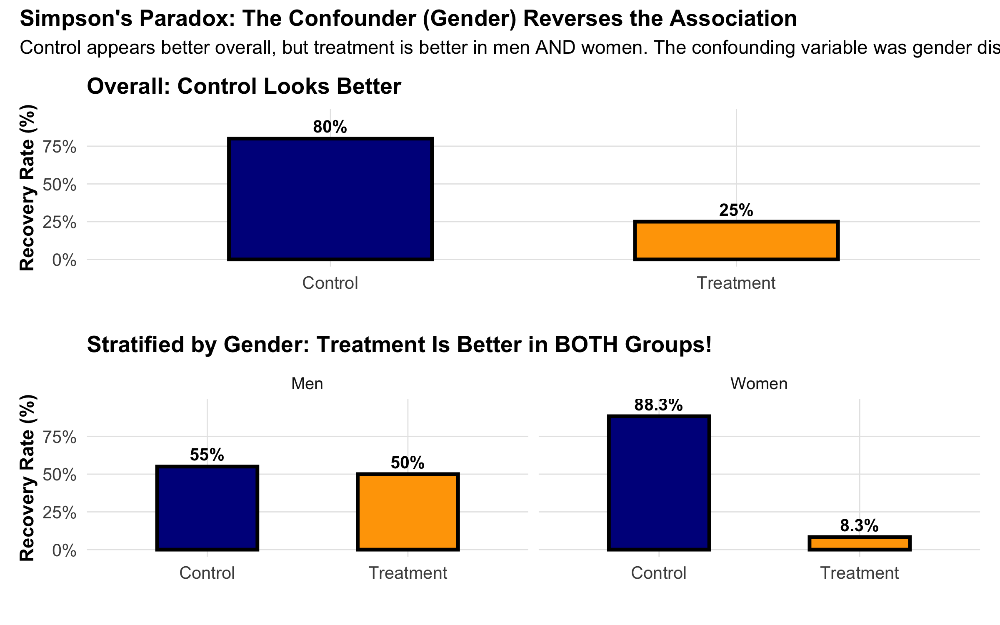
Methods to Control Confounding
At Design Stage:
Randomization: RCTs randomize to balance all confounders
Restriction: Include only a specific stratum (e.g., only women) to eliminate confounding by gender
Matching: In case-control studies, match cases and controls on confounder
At Analysis Stage:
Stratification: Calculate association within each stratum of the confounder
Regression adjustment: Include confounder as a covariate in regression
Propensity score: Create a “score” of probability of exposure given confounders, then match/adjust
Example: Chulha (Traditional Cooking Stove) and Respiratory Illness in Rural India
A cross-sectional study in Rajasthan finds that women using traditional chulhas have 2.5 times higher risk of chronic respiratory illness compared to women using clean cookstoves.
But is this causal? Potential confounder: Socioeconomic status (SES). - Women in poorer households use chulhas (associated with exposure) - Poorer women have worse overall health, crowded housing, and malnutrition (causes outcome) - SES is not on the causal pathway from chulha to respiratory illness
Confounding structure: - SES → Chulha use (poor families use chulhas) - SES → Respiratory illness (poor health conditions)
Solution: Stratify by SES. Calculate the association within each SES stratum: - Among poor women: chulha users have 2.0× risk (confounding adjusted) - Among middle-class women: chulha users have 1.8× risk - Adjusted estimate: ~1.9× (vs. crude 2.5×)
This adjusted estimate is closer to the true causal effect.
8.9 Part 8: Standardized Rates — Confounding by Age in Action
The most common and practically important example of confounding occurs when you compare mortality or disease rates between two populations that have different age structures. This is so fundamental that epidemiology has developed a dedicated technique for it: age standardization.
The Paradox: Is Sweden Less Healthy Than India?
Consider these crude death rates (deaths per 1,000 population per year):
Country
Crude Death Rate
Life Expectancy
India
6.4
70.8 years
Sweden
9.0
83.2 years
Sweden’s crude death rate is 41% higher than India’s — yet Swedes live 12 years longer on average. How is this possible?
The answer: age is confounding the comparison.
Code
# Population age distribution: India vs Sweden (2023 estimates)age_structure<-tibble( age_group =factor(rep(c("0–14", "15–44", "45–59", "60–74", "75+"), 2), levels =c("0–14", "15–44", "45–59", "60–74", "75+")), country =rep(c("India", "Sweden"), each =5), proportion =c(# India: very young population24.2, 41.4, 16.0, 12.0, 6.4,# Sweden: much older population17.2, 35.3, 18.5, 16.0, 13.0))ggplot(age_structure, aes(x =age_group, y =proportion, fill =country))+geom_col(position ="dodge", color ="black", linewidth =0.3)+geom_text(aes(label =paste0(proportion, "%")), position =position_dodge(width =0.9), vjust =-0.5, size =3.5)+scale_fill_manual(values =c("India"="#FF9933", "Sweden"="#006AA7"))+scale_y_continuous(limits =c(0, 50), labels =scales::label_percent(scale =1))+labs( title ="Why Sweden's Crude Death Rate Is Higher: It's the Age Structure", subtitle ="Sweden has nearly twice the proportion of people aged 60+ compared to India", x ="Age Group", y ="% of Population", fill =NULL)+theme_clean()+theme(legend.position ="top")
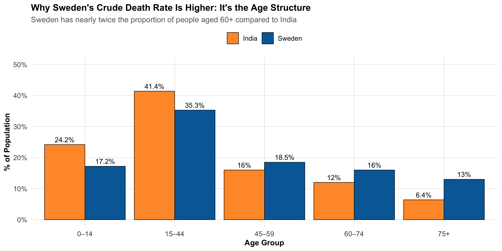
Sweden has 29% of its population aged 60 or above, compared to India’s 18.4%. Since older people die at higher rates everywhere, Sweden’s crude death rate is pulled up simply because a larger fraction of its population is in high-mortality age groups — not because Swedish healthcare is worse.
The Core Problem
Crude rates are a weighted average of age-specific rates, where the weights are each age group’s share of the population. When two populations have different age structures, their crude rates are not comparable — even if one population is healthier at every age.
Step 1: Age-Specific Death Rates
To see past the confounding, we need age-specific death rates (ASDR) — the death rate within each age group separately.
Code
# Age-specific death rates per 1,000 (approximate, 2023 data from SRS India and WHO)comparison_data<-tibble( age_group =c("0–14", "15–44", "45–59", "60–74", "75+"),# India: population (millions) and deaths india_pop =c(328, 562, 217, 163, 87), india_asdr =c(2.8, 1.5, 5.2, 22.0, 80.0),# Sweden: population (thousands) and death rates sweden_pop =c(1810, 3710, 1945, 1680, 1365), sweden_asdr =c(0.3, 0.4, 2.8, 12.0, 72.0))# Display the comparisoncomparison_data%>%mutate( india_deaths =round(india_pop*india_asdr/1000, 0), sweden_deaths =round(sweden_pop*sweden_asdr/1000, 0))%>%select( `Age Group` =age_group, `India Pop (M)` =india_pop, `India ASDR` =india_asdr, `Sweden Pop (K)` =sweden_pop, `Sweden ASDR` =sweden_asdr)%>%kbl(caption ="Age-Specific Death Rates per 1,000 — India vs Sweden", digits =1)%>%kable_styling(bootstrap_options =c("striped", "hover", "condensed"), full_width =TRUE)%>%column_spec(1, bold =TRUE)%>%add_header_above(c(" "=1, "India"=2, "Sweden"=2))
Age-Specific Death Rates per 1,000 — India vs Sweden
India
Sweden
Age Group
India Pop (M)
India ASDR
Sweden Pop (K)
Sweden ASDR
0–14
328
2.8
1810
0.3
15–44
562
1.5
3710
0.4
45–59
217
5.2
1945
2.8
60–74
163
22.0
1680
12.0
75+
87
80.0
1365
72.0
Key Insight
Sweden has LOWER age-specific death rates in EVERY age group. The crude rate reversal is entirely due to Sweden having a much older population. This is a real-world Simpson’s Paradox.
Step 2: Direct Standardization
Direct standardization answers the question: “What would each country’s death rate be if both had the same age structure?”
Method: Choose a standard population and apply each country’s age-specific rates to it.
Code
# WHO World Standard Population (proportions)standard_pop<-c(0.264, 0.378, 0.172, 0.118, 0.068)# Direct standardization: apply each country's ASDRs to the standard populationdirect_std<-comparison_data%>%mutate( std_weight =standard_pop, india_weighted =india_asdr*std_weight, sweden_weighted =sweden_asdr*std_weight)# Display the calculation step by stepdirect_std%>%select( `Age Group` =age_group, `Standard Pop (Wi)` =std_weight, `India ASDR (Ri)` =india_asdr, `Wi × Ri (India)` =india_weighted, `Sweden ASDR (Ri)` =sweden_asdr, `Wi × Ri (Sweden)` =sweden_weighted)%>%kbl(caption ="Direct Standardization: Step-by-Step Calculation", digits =3)%>%kable_styling(bootstrap_options =c("striped", "hover", "condensed"), full_width =TRUE)%>%column_spec(1, bold =TRUE)%>%row_spec(0, bold =TRUE)
Direct Standardization: Step-by-Step Calculation
Age Group
Standard Pop (Wi)
India ASDR (Ri)
Wi × Ri (India)
Sweden ASDR (Ri)
Wi × Ri (Sweden)
0–14
0.264
2.8
0.739
0.3
0.079
15–44
0.378
1.5
0.567
0.4
0.151
45–59
0.172
5.2
0.894
2.8
0.482
60–74
0.118
22.0
2.596
12.0
1.416
75+
0.068
80.0
5.440
72.0
4.896
Code
# Age-standardized death ratesindia_asr<-sum(direct_std$india_weighted)sweden_asr<-sum(direct_std$sweden_weighted)
Where \(W_i\) = proportion of standard population in age group \(i\), and \(R_i\) = age-specific rate in the study population for age group \(i\).
In words: Multiply each age group’s death rate by the standard population’s weight for that age group, then add up. This removes the effect of different age structures.
After standardization, the picture reverses: India’s age-standardized death rate is higher than Sweden’s — consistent with Sweden’s longer life expectancy and better health indicators.
Within India: Kerala vs Bihar
The same paradox plays out within India.
Code
# Kerala vs Bihar: age-specific death rates and population structure# Source: SRS Statistical Report 2023 and Census projectionskerala_bihar<-tibble( age_group =c("0–14", "15–44", "45–59", "60–74", "75+"),# Kerala: older, demographically advanced state kerala_pop_pct =c(20.3, 34.2, 19.5, 16.8, 9.2), kerala_asdr =c(0.8, 1.0, 4.5, 20.0, 85.0),# Bihar: younger population, higher age-specific mortality bihar_pop_pct =c(32.5, 40.0, 14.5, 8.5, 4.5), bihar_asdr =c(4.5, 2.2, 7.0, 28.0, 95.0))# Crude death rates (weighted by own population)kerala_crude<-sum(kerala_bihar$kerala_pop_pct/100*kerala_bihar$kerala_asdr)bihar_crude<-sum(kerala_bihar$bihar_pop_pct/100*kerala_bihar$bihar_asdr)# Direct standardization using India standard populationindia_std_pop<-c(0.242, 0.414, 0.160, 0.120, 0.064)kerala_std<-sum(india_std_pop*kerala_bihar$kerala_asdr)bihar_std<-sum(india_std_pop*kerala_bihar$bihar_asdr)
Kerala vs Bihar: Crude vs Standardized Death Rates
State
% Population 60+
Crude Death Rate
Age-Standardized Rate
Life Expectancy
Kerala
26.0%
12.6
9.2
76.3 years
Bihar
13.0%
10.0
12.6
69.2 years
Code
# Visualize the ASDR comparisonkb_long<-kerala_bihar%>%select(age_group, Kerala =kerala_asdr, Bihar =bihar_asdr)%>%pivot_longer(-age_group, names_to ="state", values_to ="asdr")%>%mutate(age_group =factor(age_group, levels =c("0–14", "15–44", "45–59", "60–74", "75+")))ggplot(kb_long, aes(x =age_group, y =asdr, fill =state))+geom_col(position ="dodge", color ="black", linewidth =0.3)+geom_text(aes(label =asdr), position =position_dodge(width =0.9), vjust =-0.5, size =3.5)+scale_fill_manual(values =c("Kerala"="#2E86C1", "Bihar"="#E74C3C"))+labs( title ="Bihar Has HIGHER Death Rates in Every Age Group", subtitle ="Yet Kerala's crude death rate appears higher because of its older population", x ="Age Group", y ="Deaths per 1,000", fill =NULL)+theme_clean()+theme(legend.position ="top")
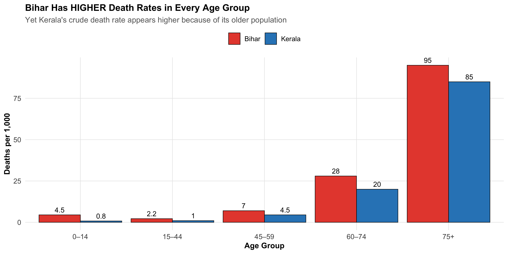
Kerala — India’s most demographically advanced state — has a higher crude death rate than Bihar despite having lower age-specific death rates in every age group and a life expectancy 7 years longer. The reason: 26% of Kerala’s population is aged 60+, compared to only 13% in Bihar.
Step 3: Indirect Standardization and the SMR
Sometimes you don’t have reliable age-specific rates — perhaps you’re studying a small industrial town with few deaths per age group, making the rates unstable. In that case, you use indirect standardization.
Method: Instead of applying the study population’s rates to a standard population, you apply the standard population’s rates to the study population’s age structure. This gives you the expected number of deaths if the study population experienced the standard rates.
Where Expected deaths \(= \sum_{i} (N_i \times R_i^{standard})\)
In words: How many deaths actually occurred in your population, divided by how many you would expect based on the national rates applied to your population’s age structure.
SMR = 100 → mortality same as the standard
SMR > 100 → excess mortality (e.g., SMR = 130 means 30% more deaths than expected)
SMR < 100 → lower mortality than the standard
Code
# Example: A thermal power plant town in Chhattisgarh# Small population — age-specific rates would be unstable# Use indirect standardization against all-India ratesplant_town<-tibble( age_group =c("0–14", "15–44", "45–59", "60–74", "75+"), town_pop =c(3200, 5800, 2500, 1200, 300), observed_deaths =c(8, 12, 18, 35, 30), india_asdr =c(2.8, 1.5, 5.2, 22.0, 80.0)# National age-specific rates per 1,000)# Expected deaths if the town had India's ratesplant_town<-plant_town%>%mutate(expected_deaths =town_pop*india_asdr/1000)total_observed<-sum(plant_town$observed_deaths)total_expected<-sum(plant_town$expected_deaths)smr<-total_observed/total_expected*100plant_town%>%select( `Age Group` =age_group, `Town Pop` =town_pop, `Observed Deaths` =observed_deaths, `India ASDR (per 1,000)` =india_asdr, `Expected Deaths` =expected_deaths)%>%kbl(caption ="Indirect Standardization: Thermal Power Plant Town, Chhattisgarh", digits =1)%>%kable_styling(bootstrap_options =c("striped", "hover", "condensed"), full_width =TRUE)%>%column_spec(1, bold =TRUE)%>%row_spec(0, bold =TRUE)
Indirect Standardization: Thermal Power Plant Town, Chhattisgarh
Age Group
Town Pop
Observed Deaths
India ASDR (per 1,000)
Expected Deaths
0–14
3200
8
2.8
9.0
15–44
5800
12
1.5
8.7
45–59
2500
18
5.2
13.0
60–74
1200
35
22.0
26.4
75+
300
30
80.0
24.0
Total observed deaths: 103 | Total expected deaths: 81.1 | SMR = 127
An SMR of 127 means the town has approximately 27% excess mortality compared to the national average, after accounting for its age structure. This could warrant an occupational health investigation.
Direct vs Indirect: When to Use Which
Direct vs Indirect Standardization
Feature
Direct Standardization
Indirect Standardization
What you apply
Study population's ASDRs → standard population weights
Standard population's ASDRs → study population structure
What you need
Reliable age-specific rates in study population
Only the age structure and total deaths in study population
Result
Age-standardized rate (per 1,000)
SMR (Standardized Mortality Ratio)
Comparable across populations?
Yes — rates are directly comparable
No — SMRs from different populations are NOT comparable to each other
Best when
Large populations with stable age-specific rates
Small populations where age-specific rates are unstable
Limitation
Need adequate numbers in every age group
SMR depends on both the standard rates and the study population's age structure
Common Mistakes
Comparing crude rates across populations with different age structures without standardization.
Comparing two SMRs from different study populations. SMRs are valid only against the reference — NOT against each other. If you need to compare two populations, use direct standardization.
Using different standard populations for direct standardization and then comparing the results. Rates standardized to different standards are not comparable.
Forgetting that standardized rates are fictional. They tell you what the rate would be if the population had a certain age structure. They are useful for comparison, not for planning healthcare resources (use crude rates for that).
Beyond Age: The General Principle
Age is the most common confounder addressed by standardization, but the same logic applies to any variable:
Sex-standardized rates — compare disease rates between regions after removing differences in sex composition
SES-standardized rates — compare health outcomes after removing socioeconomic structure differences
The principle is always the same: when a variable confounds the comparison between populations, hold it constant by applying a common standard.
8.10 Part 9: Effect Modification (Interaction)
Effect modification is NOT confounding. It occurs when the effect of an exposure differs depending on the level of a third variable.
Confounder vs. Effect Modifier:
A confounder distorts the association and should be adjusted away.
An effect modifier indicates real biological heterogeneity. You don’t adjust it away—you report the stratified results.
Example: A blood pressure medication works differently in men vs. women (effect modifier by gender). Report results for each gender separately. Don’t adjust away the difference.
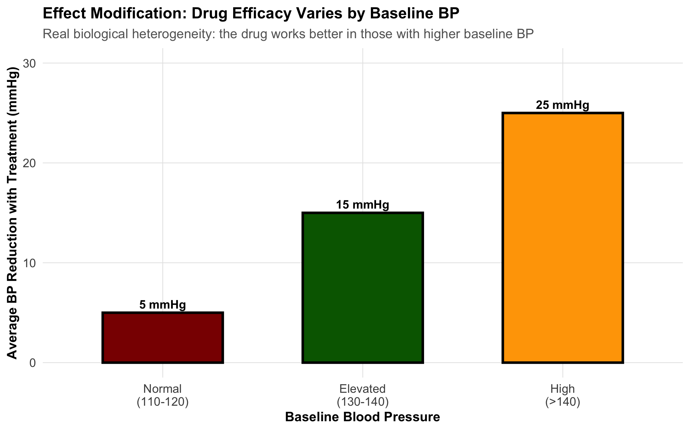
8.11 Part 10: Hierarchy of Evidence and Study Quality
The hierarchy of evidence ranks study designs by their ability to establish causality:
Important caveat: A well-designed cohort study can provide stronger evidence than a poorly designed RCT with high dropout, outcome misclassification, or selection bias.
The hierarchy is a guideline, not a rule. Judge each study on methodological quality using the GRADE framework: - Risk of bias: How likely is systematic error? - Consistency: Do similar studies agree? - Directness: Does the evidence apply to your patient? - Precision: Are confidence intervals narrow or wide?
8.12 Part 11: Choosing the Right Study Design
Decision Framework
Choosing a study design depends on your research question:
Comprehensive Comparison Table
Comprehensive Comparison of Study Designs
Aspect
Cross-Sectional
Case-Control
Cohort
RCT
Temporal sequence
No
Yes (backward)
Yes (forward)
Yes (experimental)
Measures association
Prevalence/POR
Odds Ratio
Relative Risk
Relative Risk
Time required
Months
Months
Years
Years
Cost
Low
Low-Medium
High
Very High
Loss to follow-up
Not applicable
Low (retrospective)
Moderate
Dropout bias
Confounding risk
High
High
Moderate-High
Low
Causality evidence
Weak
Moderate
Moderate-Strong
Strong
Best for
Burden estimation
Rare outcomes
Incidence, multiple outcomes
Causality, treatment efficacy
Practical Scenarios: Which Design Would You Choose?
Scenario 1: A new antibiotic for tuberculosis is available. Does it work better than the standard regimen? → RCT (you can randomize treatment; need strong evidence for new therapy)
Scenario 2: There has been a cluster of birth defects in a rural village. What’s the cause? → Case-control (rare outcome; need to identify exposure quickly) or cross-sectional (if ongoing cluster)
Scenario 3: What is the prevalence of diabetes in rural Odisha? → Cross-sectional (one-time survey; measure prevalence)
Scenario 4: Do indoor air pollutants cause lung cancer? → Cohort (long latency; outcome not rare enough for case-control to be efficient; can’t randomize to pollutants)
Exercise: Identify the Design
Study the blank schema below. Each study design uses the same tree structure — what changes are the verbs on the edges and the labels on the nodes. Can you identify which design this represents?
The key to identifying any study design:
Design
First verb
Second verb
What is estimated?
Cross-Sectional
classify
assess
Prevalence
Case-Control
select
assess
Odds ratio
Cohort
ascertain
follow-up
Incidence / RR
RCT
randomization
follow-up
Rate of event
Note on case-control studies: The diagram above shows the generic left-to-right structure. In teaching, case-control studies are often drawn right-to-left to emphasize their retrospective nature — you start with cases and look backward at exposure. Here is the same case-control design drawn in the conventional retrospective direction:
8.13 Summary: Choosing Study Design
The right design depends on: - Your research question (what do you want to know?) - The disease rarity (rare outcome → case-control; rare exposure → cohort) - Resources available (time, money, personnel) - Ethical constraints (can you randomize to the exposure?) - Practical considerations (is follow-up feasible?)
8.14 Practice MCQs: NEET PG Level
Q1. A researcher measures tea consumption and anxiety levels in 2,000 college students at the same point in time. Which type of study design is this?
✘ A. Case-control study — In a case-control study, you start with the outcome (anxious vs not anxious) and look backward at exposure. Here, both are measured simultaneously.
✔ B. Cross-sectional study — Correct! Measuring both exposure (tea) and outcome (anxiety) at the same time point is the definition of a cross-sectional study. No temporal sequence is established — you cannot tell if tea caused anxiety or anxious people drink more tea.
✘ C. Prospective cohort study — A cohort study follows participants forward in time from exposure to outcome. Here there is no follow-up — everything is measured at one time point.
✘ D. Randomized controlled trial — An RCT would require randomly assigning students to drink or not drink tea. Here, the researcher simply observes existing habits.
Q2. In a case-control study of oral cancer and paan chewing, 60 cases report paan exposure while 40 controls report exposure. Which measure of association is most appropriate?
✘ A. Relative Risk (RR) — Relative risk requires knowing the incidence in exposed and unexposed groups. Case-control studies start with the outcome, so you cannot calculate incidence or RR directly.
✔ B. Odds Ratio (OR) — Correct! Case-control studies measure the odds ratio because you start with the outcome and look backward at exposure. OR = (a/b) / (c/d). RR cannot be directly calculated from case-control designs because you select on the outcome, not the exposure.
✘ C. Prevalence Odds Ratio (POR) — POR is used in cross-sectional studies. Case-control studies use the standard odds ratio.
✘ D. Attributable Risk (AR) — Attributable risk (risk difference) requires incidence data, which case-control studies do not provide.
Q3. A hospital-based case-control study found that MI patients were much more likely to have diabetes than hospital controls. However, diabetes is very common among hospital patients. What type of bias is this?
✘ A. Recall bias — Recall bias occurs when cases remember exposures differently than controls. Here, the issue is that the controls don’t represent the general population.
✔ B. Berkson’s bias (hospital selection bias) — Correct! Hospital-based controls don’t represent the source population. Hospitalized patients have higher rates of many chronic diseases (including diabetes), so using them as controls inflates the apparent association between diabetes and MI. This is Berkson’s bias.
✘ C. Lead-time bias — Lead-time bias relates to early detection appearing to improve survival. It’s not relevant to control selection.
✘ D. Information bias — Information bias involves systematic errors in measurement. Here the problem is in who was selected as controls, not how data was measured.
Q4. In a study of outdoor cooking (chulha use) and respiratory illness, the crude OR = 2.5. After stratifying by SES, the OR within each stratum is approximately 1.8–1.9. SES is likely:
✘ A. An effect modifier (the association differs by SES) — Effect modification means the OR is substantially different across strata (e.g., 3.0 in low SES vs 1.2 in high SES). Here the ORs are similar across strata (~1.8–1.9), ruling out effect modification.
✔ B. A confounder (SES is associated with both exposure and outcome) — Correct! When the association changes after stratification (crude 2.5 → adjusted ~1.8–1.9) but remains similar across strata, the stratifying variable is a confounder. SES is associated with chulha use (lower SES → more chulha use) AND with respiratory illness (lower SES → worse health conditions), inflating the crude OR.
✘ C. An intermediate variable (on the causal pathway) — If SES were on the pathway between chulha use and respiratory illness, adjusting for it would be inappropriate (overadjustment). SES precedes chulha use, not the other way around.
✘ D. Unrelated to the exposure-outcome association — If SES were unrelated, the crude and stratified ORs would be the same. The change from 2.5 to 1.8–1.9 shows SES is related.
Q5. Why do RCTs control confounding better than observational cohort studies?
✘ A. RCTs measure outcomes more accurately — Outcome measurement accuracy relates to blinding and measurement protocols, not to confounding control. A cohort study can measure outcomes just as accurately.
✔ B. RCTs randomize assignment, breaking the association between confounders and exposure — Correct! Randomization distributes ALL confounders — both known and unknown — equally between treatment and control groups. This breaks the causal link between confounders and exposure assignment. No observational design can achieve this for unknown confounders.
✘ C. RCTs always have larger sample sizes — RCTs often have smaller sample sizes than observational studies. Sample size helps with precision but doesn’t control confounding.
✘ D. RCTs use blinding to reduce confounders — Blinding reduces information bias (differential assessment of outcomes), not confounding. Randomization is what controls confounding.
Q6. In Simpson’s Paradox, an overall association reverses when stratified by a third variable. Why does this happen?
✘ A. The third variable is an effect modifier — Effect modification means the effect varies across strata but doesn’t reverse the overall direction. Simpson’s Paradox is specifically about confounding reversing the apparent direction.
✔ B. The third variable is a confounder that distorts the crude association — Correct! Simpson’s Paradox is a dramatic example of confounding. The confounder is so strongly associated with both exposure and outcome that it reverses the apparent association when pooled. The stratified (adjusted) results reveal the true direction.
✘ C. The sample size is too small — Simpson’s Paradox occurs regardless of sample size. It’s a structural problem (confounding), not a precision problem.
✘ D. There is measurement error in the outcome — Measurement error typically biases toward the null — it doesn’t reverse associations. Simpson’s Paradox is caused by confounding, not measurement error.
Q7. A drug reduces blood pressure by 15 mmHg in men but only 5 mmHg in women. Gender is a(n):
✘ A. Confounder that should be adjusted in the analysis — If gender were a confounder, adjusting for it would give a single ‘true’ effect. But here the effect genuinely differs by gender — adjusting would hide real biological variation.
✔ B. Effect modifier indicating real biological heterogeneity — Correct! When the effect of an exposure (drug) differs substantially by a third variable (gender), that variable is an effect modifier. This reflects real biology — different drug metabolism, hormonal effects, etc. You don’t adjust away effect modification; you report stratified results (15 mmHg in men, 5 mmHg in women).
✘ C. Selection bias — Selection bias relates to who enters the study, not to how the drug works differently in subgroups.
✘ D. Recall bias — Recall bias involves differential memory of exposures. Blood pressure is measured objectively, not recalled.
Q8. Kerala has a higher crude death rate than Bihar, despite having better health indicators and longer life expectancy. What explains this paradox?
Kerala has a higher crude death rate than Bihar, despite having better health indicators and longer life expectancy. What explains this paradox?
✘ A. Kerala’s healthcare system is actually worse than Bihar’s — Incorrect. Kerala consistently outperforms Bihar on all health indicators — infant mortality, maternal mortality, life expectancy. The paradox is structural, not about quality of care.
✔ B. Kerala has an older population, so crude rates are confounded by age — Correct! Kerala is demographically advanced — 26% of its population is 60+ vs 13% in Bihar. Since older people have higher death rates, the crude rate is pulled up. Age-standardized rates reveal Kerala’s true advantage.
✘ C. Bihar has better data collection, making its rates appear lower — Incorrect. While data quality varies, Bihar’s SRS coverage is adequate. The paradox persists even with perfect data — it’s a structural issue with age composition.
✘ D. The crude death rate formula is wrong for Kerala — Incorrect. The formula is the same — total deaths ÷ total population. The issue is that this formula does not account for age structure differences.
Q9. In indirect standardization of a factory town (observed = 103 deaths, expected = 75 deaths), the SMR is 137. What does this mean?
In indirect standardization of a factory town (observed = 103 deaths, expected = 75 deaths), the SMR is 137. What does this mean?
✘ A. 137 excess deaths occurred in the town — Incorrect. The excess is 103 − 75 = 28 deaths, not 137. The SMR is a ratio expressed as a percentage.
✘ B. The town’s crude death rate is 137 per 1,000 — Incorrect. SMR is not a rate. It is a ratio of observed to expected deaths, expressed as a percentage of the reference population’s experience.
✔ C. The town had 37% more deaths than expected based on its age structure and national rates — Correct! SMR = (103/75) × 100 = 137. This means 37% excess mortality compared to what national age-specific rates would predict for this population’s age structure.
✘ D. This SMR can be directly compared with SMRs from other towns — Incorrect. SMRs from different populations are NOT directly comparable because they depend on both the standard rates and the local age structure. Use direct standardization if you need to compare multiple populations.
8.15 Further Learning
Textbooks and References
Sackett DL, et al.Evidence-Based Medicine: How to Practice and Teach It. Churchill Livingstone. (Gold standard on study design interpretation)
Greenland S, Rothman KJ. Chapter 7 in Epidemiology: An Introduction, 3rd ed. Oxford University Press.
Polit DF, Beck CT.Nursing Research: Generating and Assessing Evidence for Nursing Practice, 10th ed. (Excellent on study design and bias)
Guidelines and Checklists
STROBE Statement (STrengthening the Reporting Of Observational studies in Epidemiology): Guidelines for reporting observational studies → www.strobe-statement.org
CONSORT Statement (Consolidated Standards of Reporting Trials): Guidelines for reporting RCTs → www.consort-statement.org
GRADE (Grading of Recommendations Assessment, Development and Evaluation): Framework for assessing evidence quality
Indian Clinical Trial Resources
Clinical Trials Registry - India (CTRI): ctri.nic.in — Browse Indian trials
ICMR Guidelines on ethical standards for clinical research in India
Video Resources
Khan Academy: Evidence-based medicine and study design
Cochrane Collaboration: How to critically appraise studies
Module 7 completes the foundation of study design. Module 8 will address statistical inference, hypothesis testing, and p-values.
Source Code
---title: "Study Design, Bias, and Confounding"subtitle: "Why Study Design Determines What You Can Conclude"description: | Learn the spectrum of study designs from case reports to RCTs, understand selection bias, information bias, and confounding, and use DAGs to reason about causal inference. Indian clinical examples throughout.categories: - Study Design - Bias - Confounding - Epidemiology---```{r}#| label: setup#| include: falselibrary(tidyverse)library(kableExtra)source("../R/mcq.R")library(patchwork)library(scales)library(DiagrammeR)set.seed(42)theme_clean <-function() {theme_minimal(base_size =12) +theme(plot.title =element_text(face ="bold", size =13),plot.subtitle =element_text(size =11, color ="gray40"),panel.grid.minor =element_blank(),panel.grid.major =element_line(color ="gray90", linewidth =0.3),axis.text =element_text(size =10),axis.title =element_text(size =11, face ="bold"),legend.position ="bottom",legend.title =element_text(face ="bold") )}```::: {.callout-note appearance="minimal"}**Lecture slides for this module:** [Open Slides](../slides/07-study-design-slides.html){target="_blank"}:::## Hook: Does Wine Prevent Heart Disease?A landmark 10-year cohort study followed 20,000 adults and found that light wine drinkers had 30% lower risk of myocardial infarction compared to non-drinkers. Newspapers proclaimed: **"Wine is Cardioprotective!"** Cardiologists recommended moderate wine consumption as a preventive measure.But careful reading reveals the study has three critical problems:1. **Selection bias (healthy user bias)**: Non-drinkers include former alcoholics who quit *because* of prior health problems. They're inherently sicker.2. **Confounding**: Wine drinkers have higher socioeconomic status (SES), better access to healthcare, exercise more regularly, and eat Mediterranean diets.3. **Reverse causality**: Sick people quit drinking on doctor's orders. The low risk in "non-drinkers" reflects pre-existing health advantage.**The conclusion the headlines drew is almost certainly wrong.** Yet the data itself is real. What went wrong? The study design didn't prevent the researchers from drawing false conclusions.This module teaches you how to recognize which study designs allow which conclusions, and which biases can undermine even well-intentioned research.> **Every clinical question can be studied with different designs. Each design has different strengths and weaknesses for establishing causality. This is the most important skill in evidence-based medicine.**## Part 1: The Spectrum of Study DesignsThe most fundamental classification of study designs relates to two dimensions:1. **Direction of inquiry**: Does the study move forward in time (prospective) or backward (retrospective)?2. **Control of assignment**: Are participants randomly assigned to exposure (experimental) or observed as they naturally occur (observational)?### Visual Overview: Hierarchy and Spectrum```{r}#| echo: false# Create a visual hierarchyhierarchy_data <-tibble(design =factor(c("Case Series / Reports", "Cross-Sectional", "Case-Control","Cohort Study", "RCT", "Systematic Review"),levels =c("Case Series / Reports", "Cross-Sectional", "Case-Control","Cohort Study", "RCT", "Systematic Review"),ordered =TRUE),evidence_strength =c(1, 2, 3, 4, 5, 6),y_position =c(1, 2, 3, 4, 5, 6))ggplot(hierarchy_data, aes(x =0.5, y = y_position)) +geom_tile(aes(fill = evidence_strength, height =0.8), width =0.6, color ="white", linewidth =1) +geom_text(aes(label = design), size =4, color ="white", fontface ="bold") +scale_fill_gradient(low ="#FFA500", high ="#4CAF50", guide ="none") +xlim(0, 1) +ylim(0, 7) +theme_void() +theme(plot.title =element_text(face ="bold", hjust =0.5, size =13),plot.subtitle =element_text(hjust =0.5, size =11, color ="gray40") ) +labs(title ="Hierarchy of Evidence for Causality",subtitle ="Green = Stronger evidence for causality | Orange = Weaker causal inference" )```### Timeline and Direction of Inquiry```{r}#| echo: false# Create a timeline visualization showing different designstimeline_data <-tibble(design =c("Case Report", "Cross-Sectional", "Case-Control", "Cohort", "RCT"),x_start =c(0, 0, 0.2, 0, 0),x_end =c(1, 1, 1, 1.2, 1.2),y_pos =c(5, 4, 3, 2, 1),color =c("gray60", "orange", "red", "blue", "green"))ggplot() +# Timeline axisgeom_segment(x =0, xend =1.5, y =0.3, yend =0.3, color ="black", size =1) +geom_text(x =c(0, 0.5, 1, 1.5), y =0.05, label =c("PAST", "NOW", "FUTURE", ""), size =3.5, hjust =0.5) +# Design arrowsgeom_segment(aes(x = x_start, xend = x_end, y = y_pos, yend = y_pos, color = color),data = timeline_data, linewidth =1.5, arrow =arrow(length =unit(0.2, "cm"))) +geom_text(aes(x = (x_start + x_end)/2, y = y_pos +0.25, label = design, color = color),data = timeline_data, size =3.5, fontface ="bold") +# Add direction labelsgeom_text(x =0.1, y =3.3, label ="← RETROSPECTIVE", size =2.5, color ="red", angle =0) +geom_text(x =1.1, y =1.3, label ="PROSPECTIVE →", size =2.5, color ="green", angle =0) +scale_color_identity() +xlim(-0.1, 1.6) +ylim(-0.3, 5.5) +theme_void() +theme(plot.title =element_text(face ="bold", hjust =0.5, size =13)) +labs(title ="Direction of Inquiry in Different Study Designs")```### Key Distinctions::: {.key-concept}**Observational vs. Experimental Studies:**- **Observational**: Researchers observe people as they naturally occur (exposed/unexposed). Cannot establish causality confidently because confounding is inevitable.- **Experimental**: Researchers randomly assign people to exposure/no exposure. Randomization breaks confounding.:::## Part 2: Cross-Sectional Studies### Design and MeasuresA **cross-sectional study** is a snapshot. At one point in time, you measure both exposure and outcome in a defined population. Examples:- NFHS survey measuring anemia prevalence by state- A hospital survey asking patients about diet and cholesterol at the same visit- Sentinel surveillance for COVID-19 prevalence**Key limitation**: No temporal sequence. You don't know if exposure came before outcome.```{r}#| echo: falsegrViz("digraph cross_sectional { graph[rankdir = LR, bgcolor = 'transparent', nodesep = 0.6, ranksep = 0.8] node [fontname = 'Helvetica', shape = box, style = filled, fontsize = 11, margin = '0.2,0.1'] A [label = 'Population', fillcolor = '#B8D4E3'] B [label = 'Exposed', fillcolor = '#E8C07A'] C [label = 'Non-exposed', fillcolor = '#A8D5A2'] D [label = 'Presence of\\noutcome', fillcolor = '#E89595'] E [label = 'Absence of\\noutcome', fillcolor = '#D4EAF7'] F [label = 'Presence of\\noutcome', fillcolor = '#E89595'] G [label = 'Absence of\\noutcome', fillcolor = '#D4EAF7'] H [label = 'Prevalence of outcome\\nin Exposed', fillcolor = '#F0D4E8'] I [label = 'Prevalence of outcome\\nin Non-exposed', fillcolor = '#F0D4E8'] edge [label = ' classify ', fontsize = 9, fontcolor = '#555555'] A -> B; A -> C edge [label = ' assess ', fontsize = 9, fontcolor = '#555555'] B -> D; B -> E; C -> F; C -> G edge [arrowhead = none, arrowtail = none, style = tapered, label = ' estimate ', fontsize = 9, fontcolor = '#555555'] D -> H; E -> H; F -> I; G -> I}")```### Measures: Prevalence, Not IncidenceIn cross-sectional studies, we calculate **prevalence** and the **prevalence odds ratio (POR)**—NOT relative risk.::: {.formula-box}**Prevalence** = (Number with outcome) / (Total population)**Prevalence Odds Ratio (POR)** = (Odds of outcome in exposed) / (Odds of outcome in unexposed)$$\text{POR} = \frac{a/b}{c/d} = \frac{ad}{bc}$$where $a$ = exposed + outcome, $b$ = exposed – outcome, $c$ = unexposed + outcome, $d$ = unexposed – outcome:::::: {.common-mistake}**Mistake**: Reporting "relative risk" from a cross-sectional study.Cross-sectional studies measure **prevalence**, and the odds ratio approximates relative risk only when the outcome is rare (<10%). If anemia affects 40% of women, the POR is NOT a relative risk.:::### Example: Anemia in India (NFHS-like Data)```{r}#| echo: false# Simulate NFHS-like anemia data by statestates <-c("Bihar", "Jharkhand", "Odisha", "Chhattisgarh", "Madhya Pradesh","Rajasthan", "Uttar Pradesh", "Tamil Nadu", "Kerala")anemia_prev <-c(65.3, 62.8, 60.2, 58.5, 55.1, 52.3, 50.5, 35.2, 28.4)anemia_data <-tibble(state =factor(states, levels = states),prevalence = anemia_prev)ggplot(anemia_data, aes(x =reorder(state, -prevalence), y = prevalence, fill = prevalence)) +geom_col(color ="black", linewidth =0.5) +geom_text(aes(label =paste0(round(prevalence, 1), "%")), vjust =-0.5, size =3.5, fontface ="bold") +scale_fill_gradient(low ="#FFE5B4", high ="#8B0000", guide ="none") +scale_y_continuous(limits =c(0, 75), labels =label_percent(scale =1)) +labs(title ="Cross-Sectional Prevalence: Anemia in Indian States",subtitle ="Percentage of women with hemoglobin <12 g/dL",x ="State",y ="Prevalence of Anemia (%)" ) +theme_clean() +theme(axis.text.x =element_text(angle =45, hjust =1))```### Strengths and Limitations| Strength | Limitation ||----------|-----------|| Fast and inexpensive | No temporal sequence → cannot establish causality || Good for measuring burden of disease | Exposure may have changed since outcome occurred || Large sample sizes possible | Survivor bias (those with outcome who survived) || Useful for hypothesis generation | Recall bias in measuring past exposures |## Part 3: Case-Control Studies### Design: Starting with the OutcomeA **case-control study** reverses the usual causal pathway. You:1. **Identify cases** (people with the outcome)2. **Identify controls** (people without the outcome, from the same source)3. **Look backward** to compare exposure frequency between groups```{r}#| echo: falsegrViz("digraph case_control { graph[rankdir = RL, bgcolor = 'transparent', nodesep = 0.6, ranksep = 0.8] node [fontname = 'Helvetica', shape = box, style = filled, fontsize = 11, margin = '0.2,0.1'] A [label = 'Population', fillcolor = '#B8D4E3'] B [label = 'Cases', fillcolor = '#E8C07A'] C [label = 'Non-Cases', fillcolor = '#A8D5A2'] D [label = 'Exposed', fillcolor = '#E89595'] E [label = 'Non-Exposed', fillcolor = '#D4EAF7'] F [label = 'Exposed', fillcolor = '#E89595'] G [label = 'Non-Exposed', fillcolor = '#D4EAF7'] H [label = 'Odds of Exposure\\nin Cases', fillcolor = '#F0D4E8'] I [label = 'Odds of Exposure\\nin Non-Cases', fillcolor = '#F0D4E8'] edge [label = ' select ', fontsize = 9, fontcolor = '#555555'] A -> B; A -> C edge [label = ' assess ', fontsize = 9, fontcolor = '#555555'] B -> D; B -> E; C -> F; C -> G edge [arrowhead = none, arrowtail = none, style = tapered, label = ' estimate ', fontsize = 9, fontcolor = '#555555'] D -> H; E -> H; F -> I; G -> I}")```### Measure: Odds RatioThe **odds ratio** is the measure of association in case-control studies.::: {.formula-box}**Odds Ratio (OR)** = $\frac{a \times d}{b \times c}$where:- $a$ = cases with exposure- $b$ = cases without exposure- $c$ = controls with exposure- $d$ = controls without exposure**Interpretation**: An OR of 3.0 means the odds of exposure among cases is 3 times higher than among controls.:::### When to Use Case-Control StudiesCase-control studies are ideal when:1. **Outcome is rare**: Following 10,000 people for 5 years to see if 3 get cancer is expensive. Starting with 200 cancer cases is much faster.2. **Long latency period**: If a chemical exposure today causes cancer 20 years later, a cohort study would take 20 years. Case-control studies work with existing cases.3. **Expensive exposure measurement**: If measuring blood PCB levels is costly, measure it only in cases and a matched sample of controls.### Critical Issue: Control Selection::: {.clinical-hook}**The Oral Cancer Case-Control Study in North India**A study aimed to identify risk factors for oral cancer, comparing 500 patients with oral cancer to 500 hospital controls. The control group consisted of patients admitted for other reasons (dental problems, gastroenteritis, orthopedic injuries).**Problem**: The controls had different exposure patterns because they came from the same hospital. People admitted to a hospital are ill. The "healthy" reference we want doesn't match hospital patients.**Result**: Chewing tobacco appeared less strongly associated with oral cancer than it should be, because the controls also had high tobacco use (common in North India).**Solution**: Controls should come from the same source population as cases—for example, from the same neighborhoods where the cases were identified.:::::: {.key-concept}**Berkson's Bias** (Hospital-Based Selection Bias)When hospital-based controls are used, they don't represent the source population. Berkson's bias occurs because hospitalization itself is associated with certain exposures and conditions.Hospital patients are:- Sicker than the general population- More likely to have multiple conditions- Have different exposure patterns (more tobacco use, alcohol, occupational exposures)**Always use population-based controls** whenever possible.:::### Other Biases in Case-Control Studies**Recall bias**: Cases with disease often remember past exposures better (or blame past exposure for their illness), while controls forget. An oral cancer patient may more vividly recall 20 years of tobacco chewing than a healthy person recalls.```{r}#| echo: false# Create a detailed 2x2 table visualizationcc_table_data <-tibble(group =c("Cases", "Cases", "Controls", "Controls", "Total", "Total"),exposure =c("Exposed (a)", "Unexposed (b)", "Exposed (c)", "Unexposed (d)", "Exposed", "Unexposed"),n =c(60, 90, 40, 110, 100, 200),row =c(1, 1, 2, 2, 3, 3),col =c(1, 2, 1, 2, 1, 2))# Create 2x2 table with calculationstable_text <-"2×2 TABLE: ORAL CANCER AND TOBACCO CHEWING EXPOSED (a) UNEXPOSED (b) TOTALCASES 60 90 150CONTROLS 40 110 150TOTAL 100 200 300OR = (a × d) / (b × c) = (60 × 110) / (90 × 40) = 6600 / 3600 = 1.83Interpretation: Cases are 1.83 times more likely to have been exposed to tobacco than controls."ggplot() +annotate("text", x =0.5, y =0.5, label = table_text,size =3.5, family ="mono", hjust =0.5, vjust =0.5,color ="black") +xlim(0, 1) +ylim(0, 1) +theme_void() +theme(plot.background =element_rect(fill ="white", color ="black", linewidth =1) )```### Example: Oral Cancer and Paan Chewing```{r}#| echo: false# Simulate results from oral cancer studyor_data <-tibble(exposure_type =c("No paan", "Occasional", "Regular", "Heavy"),or_value =c(1.0, 2.5, 5.2, 8.7),ci_lower =c(0.8, 2.0, 4.1, 6.9),ci_upper =c(1.2, 3.2, 6.6, 11.2))ggplot(or_data, aes(x =reorder(exposure_type, or_value), y = or_value)) +geom_point(size =3.5, color ="darkred") +geom_errorbar(aes(ymin = ci_lower, ymax = ci_upper), width =0.2, color ="darkred", linewidth =1) +geom_hline(yintercept =1, linetype ="dashed", color ="gray50") +geom_text(aes(label =paste0("OR = ", round(or_value, 2))), hjust =-0.5, vjust =-0.5, size =3) +scale_y_log10() +coord_flip() +labs(title ="Dose-Response: Oral Cancer and Paan Chewing",subtitle ="Case-control study in North India (n=500 cases, 500 controls)",x ="Paan Chewing Frequency",y ="Odds Ratio (log scale)",caption ="Error bars = 95% confidence interval" ) +theme_clean() +theme(axis.text.y =element_text(hjust =1))```## Part 4: Cohort Studies### Design: Following Exposed and Unexposed ForwardA **cohort study** follows the natural causal sequence:1. **Identify exposed and unexposed** people (or different levels of exposure)2. **Follow them forward** in time3. **Measure outcome** incidence in each groupUnlike case-control studies, cohort studies measure **incidence** (new cases) and **relative risk**.```{r}#| echo: falsegrViz("digraph cohort { graph[rankdir = LR, bgcolor = 'transparent', nodesep = 0.6, ranksep = 0.8] node [fontname = 'Helvetica', shape = box, style = filled, fontsize = 11, margin = '0.2,0.1'] A [label = 'Population', fillcolor = '#B8D4E3'] B [label = 'Exposed', fillcolor = '#E8C07A'] C [label = 'Non-exposed', fillcolor = '#A8D5A2'] D [label = 'Incident Cases', fillcolor = '#E89595'] E [label = 'Do not develop\\ndisease', fillcolor = '#D4EAF7'] F [label = 'Incident Cases', fillcolor = '#E89595'] G [label = 'Do not develop\\ndisease', fillcolor = '#D4EAF7'] H [label = 'Incidence of disease\\nin Exposed', fillcolor = '#F0D4E8'] I [label = 'Incidence of disease\\nin Non-exposed', fillcolor = '#F0D4E8'] edge [label = ' ascertain ', fontsize = 9, fontcolor = '#555555'] A -> B; A -> C edge [label = ' follow-up ', fontsize = 9, fontcolor = '#555555'] B -> D; B -> E; C -> F; C -> G edge [arrowhead = none, arrowtail = none, style = tapered, label = ' estimate ', fontsize = 9, fontcolor = '#555555'] D -> H; E -> H; F -> I; G -> I}")```### Measures: Relative Risk and Absolute Risk::: {.formula-box}**Relative Risk (RR)** = $\frac{\text{Incidence in exposed}}{\text{Incidence in unexposed}} = \frac{a/(a+b)}{c/(c+d)}$**Absolute Risk Reduction (ARR)** = Incidence(unexposed) − Incidence(exposed)**Number Needed to Treat (NNT)** = $\frac{1}{\text{ARR}}$where:- $a$ = exposed with outcome- $b$ = exposed without outcome- $c$ = unexposed with outcome- $d$ = unexposed without outcome:::### Prospective vs. Retrospective Cohorts**Prospective cohorts**: Follow people forward from NOW into the FUTURE.- Gold standard but slow and expensive- Example: Framingham Heart Study (started 1948, still ongoing)**Retrospective cohorts**: Use existing records (medical charts, insurance databases) to reconstruct exposure and outcome.- Much faster and cheaper- Relies on quality of historical records- Example: Using hospital discharge records to follow patients with diabetes### Example: Tobacco and Oral Cancer in a Cohort Study```{r}#| echo: false# Simulate cohort data with follow-upcohort_example <-tibble(exposure =c("Tobacco Users", "Non-Users"),total_n =c(1000, 1000),cases =c(45, 8),follow_up_years =c(10, 10))cohort_example <- cohort_example %>%mutate(incidence_per_1000py = (cases / (total_n * follow_up_years)) *1000,rr = incidence_per_1000py / incidence_per_1000py[2] )ggplot(cohort_example, aes(x = exposure, y = incidence_per_1000py, fill = exposure)) +geom_col(color ="black", linewidth =1, width =0.6) +geom_text(aes(label =paste0(round(incidence_per_1000py, 1), " per 1000 PY")),vjust =-0.5, size =3.5, fontface ="bold") +geom_text(aes(label =paste0("Cases: ", cases), y = incidence_per_1000py *0.5),vjust =0.5, size =3, fontface ="bold", color ="white") +scale_fill_manual(values =c("darkred", "steelblue"), guide ="none") +labs(title ="Cohort Study: Incidence Rates and Relative Risk",subtitle ="10-year prospective follow-up of tobacco users vs. non-users (n=1000 each)",x ="Exposure Group",y ="Incidence Rate per 1000 Person-Years",caption ="RR = 45.0 / 8.0 = 5.6 (tobacco users have 5.6× higher risk)" ) +theme_clean() +theme(axis.text.x =element_text(size =11) )```### Strengths and Limitations of Cohort Studies| Strength | Limitation ||----------|-----------|| Clear temporal sequence (exposure before outcome) | Expensive and time-consuming || Can measure incidence and RR | Loss to follow-up can bias results || Can study multiple outcomes | Requires large sample sizes || Less prone to recall bias | Confounding is still possible |## Part 5: Randomized Controlled Trials (RCTs)### Why Randomization Breaks ConfoundingThe **randomized controlled trial** is the gold standard for establishing causality in medicine. Here's why:Randomization *breaks the causal link between confounders and exposure*. It distributes all confounders (known and unknown) equally between the exposed and control groups.```{r}#| echo: false# Simulate how randomization balances confoundersset.seed(42)n <-200rct_sim <-tibble(id =1:n,age =rnorm(n, 50, 15),ses =rnorm(n, 50, 20),group =rep(c("Drug", "Placebo"), each = n/2))# Compare means before and after randomizationconfounder_summary <- rct_sim %>%group_by(group) %>%summarise(mean_age =mean(age),mean_ses =mean(ses),sd_age =sd(age),sd_ses =sd(ses),.groups ="drop" )# Plot comparisonp1 <-ggplot(rct_sim, aes(x = group, y = age, fill = group)) +geom_boxplot(alpha =0.6, color ="black") +geom_jitter(width =0.2, alpha =0.3, size =2) +scale_fill_manual(values =c("darkblue", "lightblue"), guide ="none") +labs(title ="Age Distribution by Group",x ="Group",y ="Age (years)" ) +theme_clean()p2 <-ggplot(rct_sim, aes(x = group, y = ses, fill = group)) +geom_boxplot(alpha =0.6, color ="black") +geom_jitter(width =0.2, alpha =0.3, size =2) +scale_fill_manual(values =c("darkred", "lightcoral"), guide ="none") +labs(title ="Socioeconomic Status by Group",x ="Group",y ="SES Score" ) +theme_clean()p1 + p2 +plot_annotation(title ="Randomization: Confounders Balanced Between Groups",subtitle ="After random assignment, treatment and control groups have similar age and SES distributions" )```### Key Features of RCTs**1. Allocation Concealment**: Researchers don't know which participant will get drug vs. placebo until after enrollment. This prevents bias in who gets assigned to which group.**2. Blinding**:- **Single-blind**: Participants don't know if they're getting drug or placebo- **Double-blind**: Neither participants nor researchers know- **Triple-blind**: Participants, researchers, AND analysts don't know until after analysis```{r}#| echo: falsegrViz("digraph rct { graph[rankdir = LR, bgcolor = 'transparent', nodesep = 0.6, ranksep = 0.8] node [fontname = 'Helvetica', shape = box, style = filled, fontsize = 11, margin = '0.2,0.1'] A [label = 'Population', fillcolor = '#B8D4E3'] B [label = 'Intervention', fillcolor = '#E8C07A'] C [label = 'Placebo or\\nStandard Care', fillcolor = '#A8D5A2'] D [label = 'Meets end point\\nor Outcome', fillcolor = '#E89595'] E [label = 'Does not meet\\nend point', fillcolor = '#D4EAF7'] F [label = 'Meets end point\\nor Outcome', fillcolor = '#E89595'] G [label = 'Does not meet\\nend point', fillcolor = '#D4EAF7'] H [label = 'Rate of event\\nin Intervention', fillcolor = '#F0D4E8'] I [label = 'Rate of event\\nin Placebo or SOC', fillcolor = '#F0D4E8'] edge [label = ' randomization ', fontsize = 9, fontcolor = '#555555'] A -> B; A -> C edge [label = ' follow-up ', fontsize = 9, fontcolor = '#555555'] B -> D; B -> E; C -> F; C -> G edge [arrowhead = none, arrowtail = none, style = tapered, label = ' estimate ', fontsize = 9, fontcolor = '#555555'] D -> H; E -> H; F -> I; G -> I}")```### ITT vs. Per-Protocol AnalysisTwo analysis approaches exist:**Intention-to-Treat (ITT)**: Analyze all randomized participants in their assigned groups, whether they took the drug or not.- Preserves randomization- Reflects real-world effectiveness- May underestimate true efficacy**Per-Protocol**: Analyze only those who completed treatment as assigned.- Measures efficacy under ideal conditions- Can introduce bias (who drops out?)- Less generalizable::: {.key-concept}Modern trials **always report ITT** as the primary analysis, because it maintains the validity of randomization. Per-protocol analysis is secondary.:::### Strengths and Limitations| Strength | Limitation ||----------|-----------|| Gold standard for causality | Expensive and time-consuming || Randomization breaks confounding | May be unethical (can't randomize to harmful exposures) || Double-blinding reduces bias | Hawthorne effect (behavior changes when observed) || Clear temporal sequence | Limited to one outcome per trial ||| Restricted to willing, healthy volunteers (low generalizability) |### Example: Indian COVID Vaccine Trial```{r}#| echo: false# Simulate RCT resultsvaccine_trial <-tibble(group =c("Vaccine (n=500)", "Placebo (n=500)"),covid_cases =c(12, 48),total_n =c(500, 500),attack_rate = covid_cases / total_n,percent = attack_rate *100)vaccine_trial <- vaccine_trial %>%mutate(rr = attack_rate / attack_rate[2])ggplot(vaccine_trial, aes(x = group, y = percent, fill = group)) +geom_col(color ="black", linewidth =1, width =0.5) +geom_text(aes(label =paste0(covid_cases, " cases")), vjust =-0.5,size =3.5, fontface ="bold") +geom_text(aes(label =paste0(round(percent, 1), "%"), y = percent/2),vjust =0.5, size =3.5, fontface ="bold", color ="white") +scale_fill_manual(values =c("darkgreen", "gray60"), guide ="none") +scale_y_continuous(limits =c(0, 12), labels =label_percent(scale =1)) +labs(title ="RCT: COVID Vaccine Efficacy in India",subtitle ="Attack rate: Vaccine 2.4% vs. Placebo 9.6% | Efficacy = (1 - 2.4/9.6) × 100 = 75%",x ="Group",y ="Attack Rate (%)" ) +theme_clean()```## Part 6: Bias — Systematic Errors That Distort Truth**Bias** is any systematic deviation from the true value. Unlike random error (which averages out), bias consistently pushes estimates in one direction.### Selection Bias: Who Gets In?**Selection bias** occurs when the way people are selected into the study is related to both exposure and outcome.#### Healthy Volunteer BiasPeople who volunteer for studies tend to be healthier. If comparing vitamin users (who volunteer) to non-users (population sample), vitamin users appear healthier—not because of the vitamin, but because healthier people volunteer.#### Berkson's Bias (Hospital Selection Bias)Already discussed in case-control section: Hospital-based controls don't represent the source population.#### Loss to Follow-Up BiasIn cohort studies, if sicker people drop out preferentially, your final sample is artificially healthy.```{r}#| echo: false# Simulate loss to follow-uploss_data <-tibble(time =c("Baseline", "Year 1", "Year 2", "Year 3"),exposed_n =c(500, 450, 380, 290),unexposed_n =c(500, 480, 425, 360),exposed_pct =c(50, 50, 50, 50),unexposed_pct =c(50, 50, 50, 50))# Create loss to follow-up visualizationloss_long <- loss_data %>%pivot_longer(cols =c(exposed_n, unexposed_n), names_to ="group", values_to ="n") %>%mutate(group =if_else(group =="exposed_n", "Exposed", "Unexposed"))ggplot(loss_long, aes(x = time, y = n, color = group, group = group)) +geom_line(linewidth =1.5) +geom_point(size =4) +geom_label(aes(label = n), nudge_y =15, size =3) +scale_color_manual(values =c("darkred", "darkblue")) +scale_y_continuous(limits =c(250, 550)) +labs(title ="Loss to Follow-Up Over 3 Years",subtitle ="If sicker people drop out disproportionately, estimates become biased",x ="Follow-up Period",y ="Number Remaining in Study",color ="Group" ) +theme_clean() +theme(legend.position ="bottom")```### Information/Measurement Bias: How Accurately Measured?**Recall bias**: Cases remember past exposures better than controls.- Example: A mother of a child with birth defects might recall a fever in early pregnancy better than a mother of a healthy child.**Interviewer bias**: Interviewer's knowledge of the outcome influences how questions are asked.- Example: Knowing a patient has cancer, an interviewer might ask about pesticide exposure more probing questions.**Misclassification**: Exposure or outcome is incorrectly classified.- **Non-differential misclassification** (equal error in both groups): Biases toward the null (makes associations appear weaker)- **Differential misclassification** (different error rates): Can bias in either direction```{r}#| echo: false# Simulate effect of misclassificationmisclass_data <-tibble(scenario =c("True association\n(no misclassification)", "With 10%\nmisclassification", "With 20%\nmisclassification"),true_or =c(3.0, 3.0, 3.0),observed_or =c(3.0, 2.5, 1.95),y =c(1, 2, 3))ggplot(misclass_data, aes(x = observed_or, y =reorder(scenario, y))) +geom_segment(aes(xend = true_or, yend = y), color ="gray50", linewidth =1) +geom_point(aes(color ="Observed OR"), size =4) +geom_point(aes(x = true_or, color ="True OR"), size =4) +geom_vline(xintercept =1, linetype ="dashed", color ="red") +scale_color_manual(values =c("True OR"="darkgreen", "Observed OR"="orange")) +labs(title ="Non-Differential Misclassification Biases Toward the Null",x ="Odds Ratio",y ="",color ="" ) +theme_clean() +theme(legend.position ="bottom")```### Lead-Time Bias and Length Bias**Lead-time bias**: If a disease is detected earlier (but prognosis doesn't change), survival appears longer.- Example: Screening for cancer 6 months earlier doesn't extend life, just extends the "survival time" from diagnosis.**Length bias**: Screening detects slower-growing, less fatal cancers preferentially.- Example: Breast cancer screening finds more slow-growing cancers that have good prognosis anyway.```{r}#| echo: false# Illustrate lead-time biaslead_pts <-tibble(x =c(50, 65, 44, 65),y =c(2, 2, 1, 1),color =c("red", "black", "blue", "black"))lead_labels <-tibble(x =c(50, 65, 57.5, 44, 65, 54.5, 30),y =c(2.3, 2.3, 2.6, 1.3, 1.3, 1.6, 2.5),label =c("Diagnosis", "Death", "Survival = 15 years","Diagnosis\n(Screening)", "Death", "Survival = 21 years","Same death age\nBut screening makes it\nlook like survival improved!"),color =c("black", "black", "black", "black", "black", "blue", "red"),face =c("plain", "plain", "bold", "plain", "plain", "bold", "italic"),sz =c(2.5, 2.5, 3, 2.5, 2.5, 3, 3))ggplot() +# Without screeninggeom_segment(aes(x =50, xend =65, y =2, yend =2), color ="black", linewidth =3) +# With screeninggeom_segment(aes(x =44, xend =65, y =1, yend =1), color ="blue", linewidth =3) +# Pointsgeom_point(data = lead_pts, aes(x = x, y = y, color = color), size =6) +scale_color_identity() +# Labelsgeom_text(data = lead_labels, aes(x = x, y = y, label = label, color = color),size = lead_labels$sz, fontface = lead_labels$face) +xlim(25, 75) +ylim(0.5, 3) +theme_void() +theme(plot.title =element_text(face ="bold", hjust =0.5, size =13)) +labs(title ="Lead-Time Bias: Earlier Detection ≠ Better Outcome")```## Part 7: Confounding — The Hidden Third VariableA **confounder** is a variable that:1. Is associated with the **exposure**2. **Causes** the outcome3. Is **not on the causal pathway** between exposure and outcome```{r}#| echo: falsegrViz("digraph confounder_dag { graph[rankdir = TB, bgcolor = 'transparent', nodesep = 1.0, ranksep = 0.8] node [fontname = 'Helvetica', shape = box, style = 'filled,rounded', fontsize = 12, margin = '0.25,0.15'] C [label = 'CONFOUNDER\\n(e.g. Age, SES)', fillcolor = '#9C6ADE', fontcolor = 'white', width = 2.5] E [label = 'EXPOSURE', fillcolor = '#E89595', fontcolor = 'white', width = 2] O [label = 'OUTCOME', fillcolor = '#66BB6A', fontcolor = 'white', width = 2] edge [fontname = 'Helvetica', fontsize = 10, fontcolor = '#555555', penwidth = 2.0, color = '#555555'] C -> E [label = ' associated with '] C -> O [label = ' causes '] edge [style = dashed, color = '#CC0000', fontcolor = '#CC0000', penwidth = 2.0] E -> O [label = ' observed association\\n(spurious or distorted) '] labelloc = t label = 'Confounding: A Third Variable Distorts the Exposure–Outcome Relationship\\n\\nThe confounder creates a backdoor path: Exposure ← Confounder → Outcome\\nThis makes it look like Exposure causes Outcome, even if it does not.' fontname = 'Helvetica' fontsize = 12 fontcolor = '#333333'}")```### Classic Example: The Wine Paradox (Revisited)Why does wine appear protective for heart disease in observational studies?```{r}#| echo: falsegrViz("digraph wine_confounding { graph[rankdir = TB, bgcolor = 'transparent', nodesep = 1.2, ranksep = 0.8] node [fontname = 'Helvetica', shape = box, style = 'filled,rounded', fontsize = 12, margin = '0.25,0.15'] SES [label = 'Socioeconomic Status\\n& Healthy Lifestyle', fillcolor = '#9C6ADE', fontcolor = 'white', width = 3] WINE [label = 'Wine Drinking', fillcolor = '#C0392B', fontcolor = 'white', width = 2] MI [label = 'Lower MI Risk', fillcolor = '#27AE60', fontcolor = 'white', width = 2] edge [fontname = 'Helvetica', fontsize = 10, fontcolor = '#555555', penwidth = 2.0, color = '#555555'] SES -> WINE [label = ' Higher SES → more\\n wine consumption '] SES -> MI [label = ' Higher SES → better diet,\\n exercise, healthcare '] edge [style = dashed, color = '#CC0000', fontcolor = '#CC0000', penwidth = 2.0] WINE -> MI [label = ' Observed: wine → lower MI\\n (spurious — actually SES!) '] labelloc = t label = 'Wine Paradox: SES Confounds the Wine–Heart Disease Association\\n\\nWine drinkers have lower MI not because of wine,\\nbut because they tend to have higher SES and healthier lifestyles.' fontname = 'Helvetica' fontsize = 12 fontcolor = '#333333'}")```### Simpson's Paradox: Confounding in ActionA striking example of confounding is **Simpson's Paradox**: an association reverses when you account for a third variable.```{r}#| echo: false# Simpson's paradox example: medication and recovery# Hypothetical: medication appears harmful overall, but helpful in each gendersimpson_data <-tibble(group =c("Overall: Treatment", "Overall: Control","Men: Treatment", "Men: Control","Women: Treatment", "Women: Control"),recovered =c(250, 320, 200, 55, 50, 265),not_recovered =c(750, 80, 200, 45, 550, 35),total = recovered + not_recovered,recovery_rate = recovered / total *100,stratum =c("Overall", "Overall", "Men", "Men", "Women", "Women"),treatment =c("Treatment", "Control", "Treatment", "Control", "Treatment", "Control"))p1 <-ggplot(filter(simpson_data, stratum =="Overall"),aes(x = treatment, y = recovery_rate, fill = treatment)) +geom_col(color ="black", linewidth =1, width =0.5) +geom_text(aes(label =paste0(round(recovery_rate, 1), "%")), vjust =-0.5, size =3.5, fontface ="bold") +scale_fill_manual(values =c("darkblue", "orange"), guide ="none") +scale_y_continuous(limits =c(0, 95), labels =label_percent(scale =1)) +labs(title ="Overall: Control Looks Better",x ="",y ="Recovery Rate (%)" ) +theme_clean()p2 <-ggplot(filter(simpson_data, stratum !="Overall"),aes(x = treatment, y = recovery_rate, fill = treatment)) +facet_wrap(~stratum, nrow =1) +geom_col(color ="black", linewidth =1, width =0.5) +geom_text(aes(label =paste0(round(recovery_rate, 1), "%")), vjust =-0.5, size =3.5, fontface ="bold") +scale_fill_manual(values =c("darkblue", "orange"), guide ="none") +scale_y_continuous(limits =c(0, 95), labels =label_percent(scale =1)) +labs(title ="Stratified by Gender: Treatment Is Better in BOTH Groups!",x ="",y ="Recovery Rate (%)" ) +theme_clean()p1 / p2 +plot_annotation(title ="Simpson's Paradox: The Confounder (Gender) Reverses the Association",subtitle ="Control appears better overall, but treatment is better in men AND women. The confounding variable was gender distribution.",theme =theme(plot.title =element_text(face ="bold", size =13)) )```### Methods to Control Confounding#### At Design Stage:1. **Randomization**: RCTs randomize to balance all confounders2. **Restriction**: Include only a specific stratum (e.g., only women) to eliminate confounding by gender3. **Matching**: In case-control studies, match cases and controls on confounder#### At Analysis Stage:1. **Stratification**: Calculate association within each stratum of the confounder2. **Regression adjustment**: Include confounder as a covariate in regression3. **Propensity score**: Create a "score" of probability of exposure given confounders, then match/adjust::: {.clinical-hook}**Example: Chulha (Traditional Cooking Stove) and Respiratory Illness in Rural India**A cross-sectional study in Rajasthan finds that women using traditional chulhas have 2.5 times higher risk of chronic respiratory illness compared to women using clean cookstoves.**But is this causal?** Potential confounder: **Socioeconomic status (SES)**.- Women in poorer households use chulhas (associated with exposure)- Poorer women have worse overall health, crowded housing, and malnutrition (causes outcome)- SES is not on the causal pathway from chulha to respiratory illness**Confounding structure:**- SES → Chulha use (poor families use chulhas)- SES → Respiratory illness (poor health conditions)**Solution**: Stratify by SES. Calculate the association within each SES stratum:- Among poor women: chulha users have 2.0× risk (confounding adjusted)- Among middle-class women: chulha users have 1.8× risk- Adjusted estimate: ~1.9× (vs. crude 2.5×)This adjusted estimate is closer to the true causal effect.:::## Part 8: Standardized Rates — Confounding by Age in ActionThe most common and practically important example of confounding occurs when you compare mortality or disease rates between two populations that have different age structures. This is so fundamental that epidemiology has developed a dedicated technique for it: **age standardization**.### The Paradox: Is Sweden Less Healthy Than India?Consider these crude death rates (deaths per 1,000 population per year):| Country | Crude Death Rate | Life Expectancy ||---------|:---:|:---:|| India | 6.4 | 70.8 years || Sweden | 9.0 | 83.2 years |Sweden's crude death rate is **41% higher** than India's — yet Swedes live 12 years longer on average. How is this possible?The answer: **age is confounding the comparison.**```{r}#| label: india-sweden-age#| fig-height: 5#| fig-width: 10# Population age distribution: India vs Sweden (2023 estimates)age_structure <-tibble(age_group =factor(rep(c("0–14", "15–44", "45–59", "60–74", "75+"), 2),levels =c("0–14", "15–44", "45–59", "60–74", "75+")),country =rep(c("India", "Sweden"), each =5),proportion =c(# India: very young population24.2, 41.4, 16.0, 12.0, 6.4,# Sweden: much older population17.2, 35.3, 18.5, 16.0, 13.0 ))ggplot(age_structure, aes(x = age_group, y = proportion, fill = country)) +geom_col(position ="dodge", color ="black", linewidth =0.3) +geom_text(aes(label =paste0(proportion, "%")),position =position_dodge(width =0.9), vjust =-0.5, size =3.5) +scale_fill_manual(values =c("India"="#FF9933", "Sweden"="#006AA7")) +scale_y_continuous(limits =c(0, 50), labels = scales::label_percent(scale =1)) +labs(title ="Why Sweden's Crude Death Rate Is Higher: It's the Age Structure",subtitle ="Sweden has nearly twice the proportion of people aged 60+ compared to India",x ="Age Group", y ="% of Population", fill =NULL ) +theme_clean() +theme(legend.position ="top")```Sweden has 29% of its population aged 60 or above, compared to India's 18.4%. Since older people die at higher rates everywhere, Sweden's crude death rate is pulled up simply because a larger fraction of its population is in high-mortality age groups — not because Swedish healthcare is worse.::: {.callout-important title="The Core Problem"}**Crude rates are a weighted average** of age-specific rates, where the weights are each age group's share of the population. When two populations have different age structures, their crude rates are not comparable — even if one population is healthier at every age.:::### Step 1: Age-Specific Death RatesTo see past the confounding, we need **age-specific death rates** (ASDR) — the death rate within each age group separately.```{r}#| label: india-sweden-asdr#| echo: true# Age-specific death rates per 1,000 (approximate, 2023 data from SRS India and WHO)comparison_data <-tibble(age_group =c("0–14", "15–44", "45–59", "60–74", "75+"),# India: population (millions) and deathsindia_pop =c(328, 562, 217, 163, 87),india_asdr =c(2.8, 1.5, 5.2, 22.0, 80.0),# Sweden: population (thousands) and death ratessweden_pop =c(1810, 3710, 1945, 1680, 1365),sweden_asdr =c(0.3, 0.4, 2.8, 12.0, 72.0))# Display the comparisoncomparison_data %>%mutate(india_deaths =round(india_pop * india_asdr /1000, 0),sweden_deaths =round(sweden_pop * sweden_asdr /1000, 0) ) %>%select(`Age Group`= age_group,`India Pop (M)`= india_pop,`India ASDR`= india_asdr,`Sweden Pop (K)`= sweden_pop,`Sweden ASDR`= sweden_asdr ) %>%kbl(caption ="Age-Specific Death Rates per 1,000 — India vs Sweden",digits =1) %>%kable_styling(bootstrap_options =c("striped", "hover", "condensed"), full_width =TRUE) %>%column_spec(1, bold =TRUE) %>%add_header_above(c(" "=1, "India"=2, "Sweden"=2))```::: {.callout-tip title="Key Insight"}**Sweden has LOWER age-specific death rates in EVERY age group.** The crude rate reversal is entirely due to Sweden having a much older population. This is a real-world Simpson's Paradox.:::### Step 2: Direct Standardization**Direct standardization** answers the question: *"What would each country's death rate be if both had the same age structure?"***Method:** Choose a **standard population** and apply each country's age-specific rates to it.```{r}#| label: direct-standardization#| echo: true# WHO World Standard Population (proportions)standard_pop <-c(0.264, 0.378, 0.172, 0.118, 0.068)# Direct standardization: apply each country's ASDRs to the standard populationdirect_std <- comparison_data %>%mutate(std_weight = standard_pop,india_weighted = india_asdr * std_weight,sweden_weighted = sweden_asdr * std_weight )# Display the calculation step by stepdirect_std %>%select(`Age Group`= age_group,`Standard Pop (Wi)`= std_weight,`India ASDR (Ri)`= india_asdr,`Wi × Ri (India)`= india_weighted,`Sweden ASDR (Ri)`= sweden_asdr,`Wi × Ri (Sweden)`= sweden_weighted ) %>%kbl(caption ="Direct Standardization: Step-by-Step Calculation",digits =3) %>%kable_styling(bootstrap_options =c("striped", "hover", "condensed"), full_width =TRUE) %>%column_spec(1, bold =TRUE) %>%row_spec(0, bold =TRUE)# Age-standardized death ratesindia_asr <-sum(direct_std$india_weighted)sweden_asr <-sum(direct_std$sweden_weighted)``````{r}#| label: direct-std-result#| echo: falseresult_df <-tibble(Measure =c("Crude Death Rate (per 1,000)", "Age-Standardized Rate (per 1,000)"),India =c(6.4, round(india_asr, 2)),Sweden =c(9.0, round(sweden_asr, 2)))result_df %>%kbl(caption ="Crude vs Age-Standardized Death Rates") %>%kable_styling(bootstrap_options =c("striped", "hover"), full_width =FALSE) %>%row_spec(1, background ="#FFE0E0") %>%row_spec(2, background ="#E0FFE0")```::: {.callout-note title="Formula: Direct Standardization"}$$\text{Age-Standardized Rate} = \sum_{i} \left( W_i \times R_i \right)$$Where $W_i$ = proportion of standard population in age group $i$, and $R_i$ = age-specific rate in the study population for age group $i$.**In words:** Multiply each age group's death rate by the standard population's weight for that age group, then add up. This removes the effect of different age structures.:::After standardization, the picture reverses: India's age-standardized death rate is higher than Sweden's — consistent with Sweden's longer life expectancy and better health indicators.### Within India: Kerala vs BiharThe same paradox plays out within India.```{r}#| label: kerala-bihar#| echo: true# Kerala vs Bihar: age-specific death rates and population structure# Source: SRS Statistical Report 2023 and Census projectionskerala_bihar <-tibble(age_group =c("0–14", "15–44", "45–59", "60–74", "75+"),# Kerala: older, demographically advanced statekerala_pop_pct =c(20.3, 34.2, 19.5, 16.8, 9.2),kerala_asdr =c(0.8, 1.0, 4.5, 20.0, 85.0),# Bihar: younger population, higher age-specific mortalitybihar_pop_pct =c(32.5, 40.0, 14.5, 8.5, 4.5),bihar_asdr =c(4.5, 2.2, 7.0, 28.0, 95.0))# Crude death rates (weighted by own population)kerala_crude <-sum(kerala_bihar$kerala_pop_pct /100* kerala_bihar$kerala_asdr)bihar_crude <-sum(kerala_bihar$bihar_pop_pct /100* kerala_bihar$bihar_asdr)# Direct standardization using India standard populationindia_std_pop <-c(0.242, 0.414, 0.160, 0.120, 0.064)kerala_std <-sum(india_std_pop * kerala_bihar$kerala_asdr)bihar_std <-sum(india_std_pop * kerala_bihar$bihar_asdr)``````{r}#| label: kerala-bihar-table#| echo: false# Fix the variable name and recalculatebihar_crude <-sum(kerala_bihar$bihar_pop_pct /100* kerala_bihar$bihar_asdr)kb_result <-tibble(State =c("Kerala", "Bihar"),`% Population 60+`=c("26.0%", "13.0%"),`Crude Death Rate`=c(round(kerala_crude, 1), round(bihar_crude, 1)),`Age-Standardized Rate`=c(round(kerala_std, 1), round(bihar_std, 1)),`Life Expectancy`=c("76.3 years", "69.2 years"))kb_result %>%kbl(caption ="Kerala vs Bihar: Crude vs Standardized Death Rates") %>%kable_styling(bootstrap_options =c("striped", "hover"), full_width =FALSE) %>%column_spec(1, bold =TRUE) %>%column_spec(3, background ="#FFE0E0") %>%column_spec(4, background ="#E0FFE0")``````{r}#| label: kerala-bihar-plot#| fig-height: 5#| fig-width: 10# Visualize the ASDR comparisonkb_long <- kerala_bihar %>%select(age_group, Kerala = kerala_asdr, Bihar = bihar_asdr) %>%pivot_longer(-age_group, names_to ="state", values_to ="asdr") %>%mutate(age_group =factor(age_group, levels =c("0–14", "15–44", "45–59", "60–74", "75+")))ggplot(kb_long, aes(x = age_group, y = asdr, fill = state)) +geom_col(position ="dodge", color ="black", linewidth =0.3) +geom_text(aes(label = asdr),position =position_dodge(width =0.9), vjust =-0.5, size =3.5) +scale_fill_manual(values =c("Kerala"="#2E86C1", "Bihar"="#E74C3C")) +labs(title ="Bihar Has HIGHER Death Rates in Every Age Group",subtitle ="Yet Kerala's crude death rate appears higher because of its older population",x ="Age Group", y ="Deaths per 1,000", fill =NULL ) +theme_clean() +theme(legend.position ="top")```Kerala — India's most demographically advanced state — has a higher crude death rate than Bihar despite having *lower* age-specific death rates in every age group and a life expectancy 7 years longer. The reason: 26% of Kerala's population is aged 60+, compared to only 13% in Bihar.### Step 3: Indirect Standardization and the SMRSometimes you don't have reliable age-specific rates — perhaps you're studying a small industrial town with few deaths per age group, making the rates unstable. In that case, you use **indirect standardization**.**Method:** Instead of applying the study population's rates to a standard population, you apply the **standard population's rates** to the study population's age structure. This gives you the **expected** number of deaths if the study population experienced the standard rates.::: {.callout-note title="Formula: Standardized Mortality Ratio (SMR)"}$$\text{SMR} = \frac{\text{Observed deaths}}{\text{Expected deaths}} \times 100$$Where Expected deaths $= \sum_{i} (N_i \times R_i^{standard})$**In words:** How many deaths actually occurred in your population, divided by how many you *would expect* based on the national rates applied to your population's age structure.- **SMR = 100** → mortality same as the standard- **SMR > 100** → excess mortality (e.g., SMR = 130 means 30% more deaths than expected)- **SMR < 100** → lower mortality than the standard:::```{r}#| label: smr-example#| echo: true# Example: A thermal power plant town in Chhattisgarh# Small population — age-specific rates would be unstable# Use indirect standardization against all-India ratesplant_town <-tibble(age_group =c("0–14", "15–44", "45–59", "60–74", "75+"),town_pop =c(3200, 5800, 2500, 1200, 300),observed_deaths =c(8, 12, 18, 35, 30),india_asdr =c(2.8, 1.5, 5.2, 22.0, 80.0) # National age-specific rates per 1,000)# Expected deaths if the town had India's ratesplant_town <- plant_town %>%mutate(expected_deaths = town_pop * india_asdr /1000)total_observed <-sum(plant_town$observed_deaths)total_expected <-sum(plant_town$expected_deaths)smr <- total_observed / total_expected *100plant_town %>%select(`Age Group`= age_group,`Town Pop`= town_pop,`Observed Deaths`= observed_deaths,`India ASDR (per 1,000)`= india_asdr,`Expected Deaths`= expected_deaths ) %>%kbl(caption ="Indirect Standardization: Thermal Power Plant Town, Chhattisgarh",digits =1) %>%kable_styling(bootstrap_options =c("striped", "hover", "condensed"), full_width =TRUE) %>%column_spec(1, bold =TRUE) %>%row_spec(0, bold =TRUE)```**Total observed deaths:** `r total_observed` | **Total expected deaths:** `r round(total_expected, 1)` | **SMR = `r round(smr, 0)`**An SMR of `r round(smr, 0)` means the town has approximately `r round(smr - 100, 0)`% excess mortality compared to the national average, after accounting for its age structure. This could warrant an occupational health investigation.### Direct vs Indirect: When to Use Which```{r}#| label: direct-vs-indirect#| echo: falsemethod_table <-tibble(Feature =c("What you apply","What you need","Result","Comparable across populations?","Best when","Limitation" ),`Direct Standardization`=c("Study population's ASDRs → standard population weights","Reliable age-specific rates in study population","Age-standardized rate (per 1,000)","Yes — rates are directly comparable","Large populations with stable age-specific rates","Need adequate numbers in every age group" ),`Indirect Standardization`=c("Standard population's ASDRs → study population structure","Only the age structure and total deaths in study population","SMR (Standardized Mortality Ratio)","No — SMRs from different populations are NOT comparable to each other","Small populations where age-specific rates are unstable","SMR depends on both the standard rates and the study population's age structure" ))method_table %>%kbl(caption ="Direct vs Indirect Standardization") %>%kable_styling(bootstrap_options =c("striped", "hover", "condensed"), full_width =TRUE) %>%column_spec(1, bold =TRUE, width ="22%") %>%column_spec(2:3, width ="39%")```::: {.callout-warning title="Common Mistakes"}1. **Comparing crude rates** across populations with different age structures without standardization.2. **Comparing two SMRs** from different study populations. SMRs are valid only against the reference — NOT against each other. If you need to compare two populations, use direct standardization.3. **Using different standard populations** for direct standardization and then comparing the results. Rates standardized to different standards are not comparable.4. **Forgetting that standardized rates are fictional.** They tell you what the rate *would be* if the population had a certain age structure. They are useful for comparison, not for planning healthcare resources (use crude rates for that).:::### Beyond Age: The General PrincipleAge is the most common confounder addressed by standardization, but the same logic applies to any variable:- **Sex-standardized rates** — compare disease rates between regions after removing differences in sex composition- **SES-standardized rates** — compare health outcomes after removing socioeconomic structure differencesThe principle is always the same: when a variable confounds the comparison between populations, hold it constant by applying a common standard.## Part 9: Effect Modification (Interaction)**Effect modification** is NOT confounding. It occurs when the effect of an exposure differs depending on the level of a third variable.::: {.key-concept}**Confounder vs. Effect Modifier:**A **confounder** distorts the association and should be adjusted away.An **effect modifier** indicates real biological heterogeneity. You don't adjust it away—you report the stratified results.**Example**: A blood pressure medication works differently in men vs. women (effect modifier by gender). Report results for each gender separately. Don't adjust away the difference.:::```{r}#| echo: false# Simulate drug efficacy varying by baseline BPem_data <-tibble(baseline_bp =c("Normal\n(110-120)", "Elevated\n(130-140)", "High\n(>140)"),treatment_effect_reduction =c(5, 15, 25),y =c(1, 2, 3))ggplot(em_data, aes(x =reorder(baseline_bp, y), y = treatment_effect_reduction, fill = baseline_bp)) +geom_col(color ="black", linewidth =1, width =0.6) +geom_text(aes(label =paste0(treatment_effect_reduction, " mmHg")), vjust =-0.5, size =3.5, fontface ="bold") +scale_fill_manual(values =c("darkgreen", "orange", "darkred"), guide ="none") +scale_y_continuous(limits =c(0, 30)) +labs(title ="Effect Modification: Drug Efficacy Varies by Baseline BP",x ="Baseline Blood Pressure",y ="Average BP Reduction with Treatment (mmHg)",subtitle ="Real biological heterogeneity: the drug works better in those with higher baseline BP" ) +theme_clean()```## Part 10: Hierarchy of Evidence and Study QualityThe **hierarchy of evidence** ranks study designs by their ability to establish causality:```{r}#| echo: falsegrViz("digraph evidence_pyramid { graph[rankdir = TB, bgcolor = 'transparent', nodesep = 0.3, ranksep = 0.4] node [fontname = 'Helvetica', shape = box, style = filled, fontsize = 11, margin = '0.3,0.15'] SR [label = 'Systematic Reviews &\\nMeta-Analyses', fillcolor = '#2E7D32', fontcolor = 'white', width = 2.5] RCT [label = 'Randomized Controlled Trials', fillcolor = '#43A047', fontcolor = 'white', width = 3.5] COH [label = 'Cohort Studies (Prospective)', fillcolor = '#66BB6A', fontcolor = 'white', width = 4.5] CC [label = 'Case-Control Studies', fillcolor = '#FFA726', fontcolor = 'white', width = 5.5] CS [label = 'Cross-Sectional Studies', fillcolor = '#FF7043', fontcolor = 'white', width = 6.5] CR [label = 'Case Reports & Case Series', fillcolor = '#EF5350', fontcolor = 'white', width = 7.5] edge [arrowhead = none, color = '#888888'] SR -> RCT -> COH -> CC -> CS -> CR labelloc = t label = 'Evidence Pyramid: Hierarchy of Study Designs\\n(Top = Strongest evidence for causality)' fontname = 'Helvetica' fontsize = 14 fontcolor = '#333333'}")```::: {.common-mistake}**Important caveat**: A well-designed cohort study can provide stronger evidence than a poorly designed RCT with high dropout, outcome misclassification, or selection bias.The hierarchy is a **guideline**, not a rule. Judge each study on methodological quality using the **GRADE framework**:- **Risk of bias**: How likely is systematic error?- **Consistency**: Do similar studies agree?- **Directness**: Does the evidence apply to your patient?- **Precision**: Are confidence intervals narrow or wide?:::## Part 11: Choosing the Right Study Design### Decision FrameworkChoosing a study design depends on your research question:```{r}#| echo: falsegrViz("digraph decision { graph[rankdir = TB, bgcolor = 'transparent', nodesep = 0.5, ranksep = 0.6] node [fontname = 'Helvetica', style = filled, fontsize = 10, margin = '0.2,0.1'] Q [label = 'What is your\\nresearch question?', shape = diamond, fillcolor = '#B8D4E3', width = 2.5] Q1 [label = 'What is the\\nburden of disease?', shape = box, fillcolor = '#E8E8E8'] Q2 [label = 'What factors are\\nassociated?', shape = box, fillcolor = '#E8E8E8'] Q3 [label = 'Does X cause Y?\\n(Outcome is rare)', shape = box, fillcolor = '#E8E8E8'] Q4 [label = 'Does X cause Y?\\n(Can randomize)', shape = box, fillcolor = '#E8E8E8'] Q5 [label = 'Does X cause Y?\\n(Cannot randomize)', shape = box, fillcolor = '#E8E8E8'] Q6 [label = 'Synthesize all\\nevidence?', shape = box, fillcolor = '#E8E8E8'] A1 [label = 'Cross-Sectional\\nStudy', shape = box, fillcolor = '#FF7043', fontcolor = 'white'] A2 [label = 'Cross-Sectional\\nor Cohort', shape = box, fillcolor = '#FFA726', fontcolor = 'white'] A3 [label = 'Case-Control\\nStudy', shape = box, fillcolor = '#FFA726', fontcolor = 'white'] A4 [label = 'Randomized\\nControlled Trial', shape = box, fillcolor = '#43A047', fontcolor = 'white'] A5 [label = 'Cohort Study', shape = box, fillcolor = '#66BB6A', fontcolor = 'white'] A6 [label = 'Systematic Review\\n& Meta-Analysis', shape = box, fillcolor = '#2E7D32', fontcolor = 'white'] Q -> Q1; Q -> Q2; Q -> Q3; Q -> Q4; Q -> Q5; Q -> Q6 edge [style = bold, color = '#555555'] Q1 -> A1; Q2 -> A2; Q3 -> A3; Q4 -> A4; Q5 -> A5; Q6 -> A6 labelloc = t label = 'Study Design Decision Framework' fontname = 'Helvetica' fontsize = 14 fontcolor = '#333333'}")```### Comprehensive Comparison Table```{r}#| echo: falsedesign_table <-tibble(Aspect =c("Temporal sequence","Measures association","Time required","Cost","Loss to follow-up","Confounding risk","Causality evidence","Best for" ),"Cross-Sectional"=c("No","Prevalence/POR","Months","Low","Not applicable","High","Weak","Burden estimation" ),"Case-Control"=c("Yes (backward)","Odds Ratio","Months","Low-Medium","Low (retrospective)","High","Moderate","Rare outcomes" ),"Cohort"=c("Yes (forward)","Relative Risk","Years","High","Moderate","Moderate-High","Moderate-Strong","Incidence, multiple outcomes" ),"RCT"=c("Yes (experimental)","Relative Risk","Years","Very High","Dropout bias","Low","Strong","Causality, treatment efficacy" ))design_table %>%kbl(caption ="Comprehensive Comparison of Study Designs", booktabs =TRUE, linesep ="") %>%kable_styling(latex_options =c("scale_down", "striped"),bootstrap_options =c("striped", "hover", "condensed"),full_width =TRUE,font_size =9 ) %>%column_spec(1, bold =TRUE, width ="18%") %>%column_spec(2:5, width ="20.5%")```### Practical Scenarios: Which Design Would You Choose?**Scenario 1**: A new antibiotic for tuberculosis is available. Does it work better than the standard regimen?→ **RCT** (you can randomize treatment; need strong evidence for new therapy)**Scenario 2**: There has been a cluster of birth defects in a rural village. What's the cause?→ **Case-control** (rare outcome; need to identify exposure quickly) or **cross-sectional** (if ongoing cluster)**Scenario 3**: What is the prevalence of diabetes in rural Odisha?→ **Cross-sectional** (one-time survey; measure prevalence)**Scenario 4**: Do indoor air pollutants cause lung cancer?→ **Cohort** (long latency; outcome not rare enough for case-control to be efficient; can't randomize to pollutants)### Exercise: Identify the DesignStudy the blank schema below. Each study design uses the **same tree structure** — what changes are the **verbs on the edges** and the **labels on the nodes**. Can you identify which design this represents?```{r}#| echo: falsegrViz("digraph generic { graph[rankdir = LR, bgcolor = 'transparent', nodesep = 0.6, ranksep = 0.8] node [fontname = 'Helvetica', shape = box, style = filled, fontsize = 11, margin = '0.2,0.1'] A [label = '?', fillcolor = '#B8D4E3'] B [label = '?', fillcolor = '#E8C07A'] C [label = '?', fillcolor = '#A8D5A2'] D [label = '?', fillcolor = '#E89595'] E [label = '?', fillcolor = '#D4EAF7'] F [label = '?', fillcolor = '#E89595'] G [label = '?', fillcolor = '#D4EAF7'] H [label = '?', fillcolor = '#F0D4E8'] I [label = '?', fillcolor = '#F0D4E8'] A -> B; A -> C; B -> D; B -> E; C -> F; C -> G edge [arrowhead = none, arrowtail = none, style = tapered, label = ' estimate ', fontsize = 9, fontcolor = '#555555'] D -> H; E -> H; F -> I; G -> I}")```::: {.key-concept}**The key to identifying any study design:**| Design | First verb | Second verb | What is estimated? ||--------|-----------|-------------|-------------------|| Cross-Sectional | classify | assess | Prevalence || Case-Control | select | assess | Odds ratio || Cohort | ascertain | follow-up | Incidence / RR || RCT | randomization | follow-up | Rate of event |**Note on case-control studies:** The diagram above shows the generic left-to-right structure. In teaching, case-control studies are often drawn **right-to-left** to emphasize their retrospective nature — you start with cases and look backward at exposure. Here is the same case-control design drawn in the conventional retrospective direction::::```{r}#| echo: falsegrViz("digraph case_control_rl { graph[rankdir = RL, bgcolor = 'transparent', nodesep = 0.6, ranksep = 0.8] node [fontname = 'Helvetica', shape = box, style = filled, fontsize = 11, margin = '0.2,0.1'] A [label = 'Population', fillcolor = '#B8D4E3'] B [label = 'Cases', fillcolor = '#E8C07A'] C [label = 'Non-Cases', fillcolor = '#A8D5A2'] D [label = 'Exposed', fillcolor = '#E89595'] E [label = 'Non-Exposed', fillcolor = '#D4EAF7'] F [label = 'Exposed', fillcolor = '#E89595'] G [label = 'Non-Exposed', fillcolor = '#D4EAF7'] H [label = 'Odds of Exposure\\nin Cases', fillcolor = '#F0D4E8'] I [label = 'Odds of Exposure\\nin Non-Cases', fillcolor = '#F0D4E8'] edge [label = ' select ', fontsize = 9, fontcolor = '#555555'] A -> B; A -> C edge [label = ' assess ', fontsize = 9, fontcolor = '#555555'] B -> D; B -> E; C -> F; C -> G edge [arrowhead = none, arrowtail = none, style = tapered, label = ' estimate ', fontsize = 9, fontcolor = '#555555'] D -> H; E -> H; F -> I; G -> I}")```## Summary: Choosing Study DesignThe **right design** depends on:- Your **research question** (what do you want to know?)- The **disease rarity** (rare outcome → case-control; rare exposure → cohort)- **Resources available** (time, money, personnel)- **Ethical constraints** (can you randomize to the exposure?)- **Practical considerations** (is follow-up feasible?)## Practice MCQs: NEET PG Level:::{.neet-practice}**Q1.** A researcher measures tea consumption and anxiety levels in 2,000 college students at the same point in time. Which type of study design is this?```{r}#| echo: false#| results: asismake_mcq(id ="m7q1",question ="",options =c("Case-control study"="In a case-control study, you start with the outcome (anxious vs not anxious) and look backward at exposure. Here, both are measured simultaneously.","answer:Cross-sectional study"="Correct! Measuring both exposure (tea) and outcome (anxiety) at the same time point is the definition of a cross-sectional study. No temporal sequence is established — you cannot tell if tea caused anxiety or anxious people drink more tea.","Prospective cohort study"="A cohort study follows participants forward in time from exposure to outcome. Here there is no follow-up — everything is measured at one time point.","Randomized controlled trial"="An RCT would require randomly assigning students to drink or not drink tea. Here, the researcher simply observes existing habits." ))```---**Q2.** In a case-control study of oral cancer and paan chewing, 60 cases report paan exposure while 40 controls report exposure. Which measure of association is most appropriate?```{r}#| echo: false#| results: asismake_mcq(id ="m7q2",question ="",options =c("Relative Risk (RR)"="Relative risk requires knowing the incidence in exposed and unexposed groups. Case-control studies start with the outcome, so you cannot calculate incidence or RR directly.","answer:Odds Ratio (OR)"="Correct! Case-control studies measure the odds ratio because you start with the outcome and look backward at exposure. OR = (a/b) / (c/d). RR cannot be directly calculated from case-control designs because you select on the outcome, not the exposure.","Prevalence Odds Ratio (POR)"="POR is used in cross-sectional studies. Case-control studies use the standard odds ratio.","Attributable Risk (AR)"="Attributable risk (risk difference) requires incidence data, which case-control studies do not provide." ))```---**Q3.** A hospital-based case-control study found that MI patients were much more likely to have diabetes than hospital controls. However, diabetes is very common among hospital patients. What type of bias is this?```{r}#| echo: false#| results: asismake_mcq(id ="m7q3",question ="",options =c("Recall bias"="Recall bias occurs when cases remember exposures differently than controls. Here, the issue is that the controls don't represent the general population.","answer:Berkson's bias (hospital selection bias)"="Correct! Hospital-based controls don't represent the source population. Hospitalized patients have higher rates of many chronic diseases (including diabetes), so using them as controls inflates the apparent association between diabetes and MI. This is Berkson's bias.","Lead-time bias"="Lead-time bias relates to early detection appearing to improve survival. It's not relevant to control selection.","Information bias"="Information bias involves systematic errors in measurement. Here the problem is in who was selected as controls, not how data was measured." ))```---**Q4.** In a study of outdoor cooking (chulha use) and respiratory illness, the crude OR = 2.5. After stratifying by SES, the OR within each stratum is approximately 1.8–1.9. SES is likely:```{r}#| echo: false#| results: asismake_mcq(id ="m7q4",question ="",options =c("An effect modifier (the association differs by SES)"="Effect modification means the OR is substantially different across strata (e.g., 3.0 in low SES vs 1.2 in high SES). Here the ORs are similar across strata (~1.8–1.9), ruling out effect modification.","answer:A confounder (SES is associated with both exposure and outcome)"="Correct! When the association changes after stratification (crude 2.5 → adjusted ~1.8–1.9) but remains similar across strata, the stratifying variable is a confounder. SES is associated with chulha use (lower SES → more chulha use) AND with respiratory illness (lower SES → worse health conditions), inflating the crude OR.","An intermediate variable (on the causal pathway)"="If SES were on the pathway between chulha use and respiratory illness, adjusting for it would be inappropriate (overadjustment). SES precedes chulha use, not the other way around.","Unrelated to the exposure-outcome association"="If SES were unrelated, the crude and stratified ORs would be the same. The change from 2.5 to 1.8–1.9 shows SES is related." ))```---**Q5.** Why do RCTs control confounding better than observational cohort studies?```{r}#| echo: false#| results: asismake_mcq(id ="m7q5",question ="",options =c("RCTs measure outcomes more accurately"="Outcome measurement accuracy relates to blinding and measurement protocols, not to confounding control. A cohort study can measure outcomes just as accurately.","answer:RCTs randomize assignment, breaking the association between confounders and exposure"="Correct! Randomization distributes ALL confounders — both known and unknown — equally between treatment and control groups. This breaks the causal link between confounders and exposure assignment. No observational design can achieve this for unknown confounders.","RCTs always have larger sample sizes"="RCTs often have smaller sample sizes than observational studies. Sample size helps with precision but doesn't control confounding.","RCTs use blinding to reduce confounders"="Blinding reduces information bias (differential assessment of outcomes), not confounding. Randomization is what controls confounding." ))```---**Q6.** In Simpson's Paradox, an overall association reverses when stratified by a third variable. Why does this happen?```{r}#| echo: false#| results: asismake_mcq(id ="m7q6",question ="",options =c("The third variable is an effect modifier"="Effect modification means the effect varies across strata but doesn't reverse the overall direction. Simpson's Paradox is specifically about confounding reversing the apparent direction.","answer:The third variable is a confounder that distorts the crude association"="Correct! Simpson's Paradox is a dramatic example of confounding. The confounder is so strongly associated with both exposure and outcome that it reverses the apparent association when pooled. The stratified (adjusted) results reveal the true direction.","The sample size is too small"="Simpson's Paradox occurs regardless of sample size. It's a structural problem (confounding), not a precision problem.","There is measurement error in the outcome"="Measurement error typically biases toward the null — it doesn't reverse associations. Simpson's Paradox is caused by confounding, not measurement error." ))```---**Q7.** A drug reduces blood pressure by 15 mmHg in men but only 5 mmHg in women. Gender is a(n):```{r}#| echo: false#| results: asismake_mcq(id ="m7q7",question ="",options =c("Confounder that should be adjusted in the analysis"="If gender were a confounder, adjusting for it would give a single 'true' effect. But here the effect genuinely differs by gender — adjusting would hide real biological variation.","answer:Effect modifier indicating real biological heterogeneity"="Correct! When the effect of an exposure (drug) differs substantially by a third variable (gender), that variable is an effect modifier. This reflects real biology — different drug metabolism, hormonal effects, etc. You don't adjust away effect modification; you report stratified results (15 mmHg in men, 5 mmHg in women).","Selection bias"="Selection bias relates to who enters the study, not to how the drug works differently in subgroups.","Recall bias"="Recall bias involves differential memory of exposures. Blood pressure is measured objectively, not recalled." ))```:::---**Q8.** Kerala has a higher crude death rate than Bihar, despite having better health indicators and longer life expectancy. What explains this paradox?```{r}#| echo: false#| results: asismake_mcq(id ="m7q8",question ="Kerala has a higher crude death rate than Bihar, despite having better health indicators and longer life expectancy. What explains this paradox?",options =c("Kerala's healthcare system is actually worse than Bihar's"="Incorrect. Kerala consistently outperforms Bihar on all health indicators — infant mortality, maternal mortality, life expectancy. The paradox is structural, not about quality of care.","answer:Kerala has an older population, so crude rates are confounded by age"="Correct! Kerala is demographically advanced — 26% of its population is 60+ vs 13% in Bihar. Since older people have higher death rates, the crude rate is pulled up. Age-standardized rates reveal Kerala's true advantage.","Bihar has better data collection, making its rates appear lower"="Incorrect. While data quality varies, Bihar's SRS coverage is adequate. The paradox persists even with perfect data — it's a structural issue with age composition.","The crude death rate formula is wrong for Kerala"="Incorrect. The formula is the same — total deaths ÷ total population. The issue is that this formula does not account for age structure differences." ))```---**Q9.** In indirect standardization of a factory town (observed = 103 deaths, expected = 75 deaths), the SMR is 137. What does this mean?```{r}#| echo: false#| results: asismake_mcq(id ="m7q9",question ="In indirect standardization of a factory town (observed = 103 deaths, expected = 75 deaths), the SMR is 137. What does this mean?",options =c("137 excess deaths occurred in the town"="Incorrect. The excess is 103 − 75 = 28 deaths, not 137. The SMR is a ratio expressed as a percentage.","The town's crude death rate is 137 per 1,000"="Incorrect. SMR is not a rate. It is a ratio of observed to expected deaths, expressed as a percentage of the reference population's experience.","answer:The town had 37% more deaths than expected based on its age structure and national rates"="Correct! SMR = (103/75) × 100 = 137. This means 37% excess mortality compared to what national age-specific rates would predict for this population's age structure.","This SMR can be directly compared with SMRs from other towns"="Incorrect. SMRs from different populations are NOT directly comparable because they depend on both the standard rates and the local age structure. Use direct standardization if you need to compare multiple populations." ))```---## Further Learning### Textbooks and References- **Sackett DL, et al.** *Evidence-Based Medicine: How to Practice and Teach It*. Churchill Livingstone. (Gold standard on study design interpretation)- **Greenland S, Rothman KJ.** Chapter 7 in *Epidemiology: An Introduction*, 3rd ed. Oxford University Press.- **Polit DF, Beck CT.** *Nursing Research: Generating and Assessing Evidence for Nursing Practice*, 10th ed. (Excellent on study design and bias)### Guidelines and Checklists- **STROBE Statement** (STrengthening the Reporting Of Observational studies in Epidemiology): Guidelines for reporting observational studies → [www.strobe-statement.org](https://www.strobe-statement.org)- **CONSORT Statement** (Consolidated Standards of Reporting Trials): Guidelines for reporting RCTs → [www.consort-statement.org](https://www.consort-statement.org)- **GRADE** (Grading of Recommendations Assessment, Development and Evaluation): Framework for assessing evidence quality### Indian Clinical Trial Resources- **Clinical Trials Registry - India (CTRI)**: [ctri.nic.in](https://ctri.nic.in) — Browse Indian trials- **ICMR Guidelines** on ethical standards for clinical research in India### Video Resources- Khan Academy: Evidence-based medicine and study design- Cochrane Collaboration: How to critically appraise studies---*Module 7 completes the foundation of study design. Module 8 will address statistical inference, hypothesis testing, and p-values.*